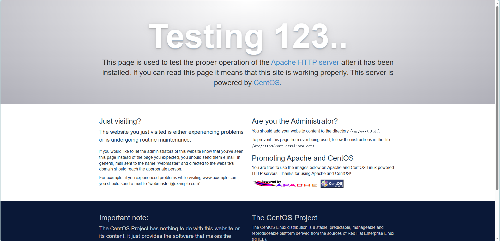
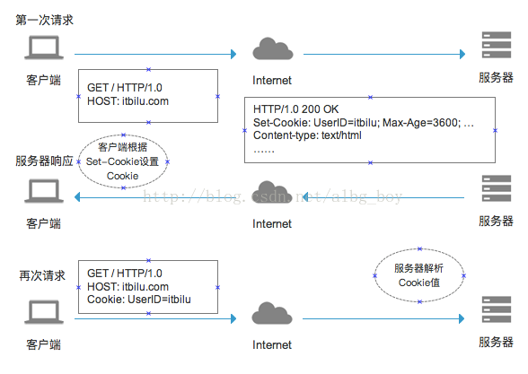

参考资料： 【黑马程序员PHP零基础入门到精通教程（P1基础6天）】 https://www.bilibili.com/video/BV18x411H7qD
【PHP零基础入门到精通教程（P2 mysql数据库5天）】 https://www.bilibili.com/video/BV1Vx411g7uJ
（P2为数据库操作，可参考MySQL笔记(已完结)）
【PHP零基础入门到精通教程（P3 核心编程技术）】 https://www.bilibili.com/video/BV1jx411M7B7
说明： 本笔记为本人学习过程中随手写的笔记，为复习使用，笔记中可能存在遗漏或错误，具体请以官方文档和权威书籍为准！谢谢！ 笔记中的一些图片等元素因路径配置问题，可能会发生丢失。 笔记中展示的知识点仅为部分内容，完整内容请查阅官方开发文档内容！
PHP（“PHP: Hypertext Preprocessor”，超文本预处理器的字母缩写）是一种被广泛应用的开放源代码的多用途脚本语言，它可嵌入到 HTML中，尤其适合 web 开发。
PHP 页面并不包含大量输出 HTML 的命令（如 C 或 Perl 中所示），而是包含嵌入代码的 HTML，这些代码可执行某些操作（在本例中为输出 Hi, I'm a PHP script!）。PHP 代码包含在特殊的开始和结束处理指令 中，允许跳入和退出 PHP 模式。
和客户端的 JavaScript 不同的是，PHP 代码是运行在服务端的。如果在服务器上建立了如上例类似的代码，则在运行该脚本后，客户端就能接收到其结果，但无法得知底层代码是什么。甚至可以将 web 服务器设置成让 PHP 来处理所有的 HTML 文件，这么一来，用户就无法知道正在使用 PHP。
使用 PHP 的最大的好处是它对于初学者来说极其简单，同时也给专业的程序员提供了各种高级的特性。当看到 PHP 长长的特性列表时，请不要害怕。使用 PHP，几乎任何人都可以快速上手并编写简单的脚本。
尽管 PHP 的开发主要侧重于服务器端脚本，但它可以做很多事情。
总结
PHP 是 "PHP Hypertext Preprocessor" 的首字母缩略词
PHP 是一种被广泛使用的开源脚本语言
PHP 脚本在服务器上执行
PHP 没有成本，可供免费下载和使用
PHP 能做任何事。PHP 主要是用于服务端的脚本程序，因此可以用 PHP 来完成任何其它的 CGI 程序能够完成的工作，例如收集表单数据，生成动态网页，或者发送/接收 Cookies。但 PHP 的功能远不局限于此。
PHP 脚本主要用于以下两个领域：
服务器端脚本。这是 PHP 使用最广泛、最主要的目标领域。开展这项工作需要具备以下三点：PHP 解析器（CGI 或服务器模块）、Web 服务器和 Web 浏览器。所有这些都可以在本地机器上运行，以便尝试 PHP 编程。有关更多信息，请参阅安装说明部分。
命令行脚本。PHP 脚本无需任何服务器或浏览器即可运行，只需 PHP 解析器即可使用。这种方式非常适合使用 cron（在 Unix 或 macOS 上）或任务计划程序（在 Windows 上）定期执行的脚本。这些脚本还可用于简单的文本处理任务。有关更多信息，请参阅有关 PHP 的命令行用法的部分。
PHP 可用于所有主流操作系统，包括 Linux、许多 Unix 变体（包括 HP-UX、Solaris 和 OpenBSD）、Microsoft Windows、macOS、RISC OS 以及其他操作系统。PHP 还支持当今大多数 Web 服务器。这包括 Apache、IIS 和许多其他服务器。这包括任何可以使用 FastCGI PHP 二进制文件的 Web 服务器，如 lighttpd 和 nginx。PHP 既可以作为模块工作，也可以作为 CGI 处理器工作。
因此，使用 PHP，开发者可以自由地选择操作系统和 web 服务器。同时，还可以在开发时选择使用面向过程或者面对对象（OOP），或者两者的混和。
PHP 不仅限于输出 HTML。PHP 的功能包括输出丰富的文件类型，例如图像或 PDF 文件、加密数据和发送电子邮件。还可以轻松输出任何文本，例如 JSON 或 XML。PHP 可以自动生成这些文件，并将它们保存在文件系统中，而不是将其打印出来，从而形成动态内容的服务器端缓存。
PHP 最强大最显著的特性之一，是它支持很大范围的数据库。使用任何针对某数据库的扩展（例如 mysql）编写数据库支持的网页非常简单，或者使用抽象层如 PDO，或者通过 ODBC 扩展连接到任何支持 ODBC 标准的数据库。其它一些数据库也可能会用 cURL 或者 sockets，例如 CouchDB。
PHP 还支持使用 LDAP、IMAP、SNMP、NNTP、POP3、HTTP、COM（Windows 环境）等协议与其他服务通信，以及其他无数协议。还可以打开原始网络套接字并使用任何其他协议进行交互。PHP 支持几乎所有 web 开发语言之间的 WDDX 复杂数据交换。关于相互连接，PHP 已经支持了对 Java 对象的实例化，并且可以无缝的将其用作 PHP 对象。
PHP 具有极其有效的文本处理特性，包括 Perl 兼容正则表达式（PCRE）以及许多扩展和工具可用于解析和访问 XML 文档。PHP 将所有的 XML 功能标准化于坚实的 libxml2 扩展，并且还增加了 SimpleXML，XMLReader 以及 XMLWriter 支持以扩充其功能。
另外，还有很多其它有趣的扩展库。
总结
PHP 能够生成动态页面内容
PHP 能够创建、打开、读取、写入、删除以及关闭服务器上的文件
PHP 能够接收表单数据
PHP 能够发送并取回 cookies
PHP 能够添加、删除、修改数据库中的数据
PHP 能够限制用户访问网站中的某些页面
PHP 能够对数据进行加密
PHP 运行于各种平台（Windows, Linux, Unix, Mac OS X 等等）
PHP 兼容几乎所有服务器（Apache, IIS 等等）
PHP 支持多种数据库
PHP 是免费的。请从官方 PHP 资源下载：www.php.net
PHP 易于学习，并可高效地运行在服务器端
PHP 文件能够包含文本、HTML、CSS 以及 PHP 代码
PHP 代码在服务器上执行，而结果以纯文本返回浏览器
PHP 文件的后缀是 ".php"
在继续学习之前，您需要对下面的知识有基本的了解：
HTML
CSS
JavaScript
Website的中文名称是网站，是指在互联网上，根据一定的规则，使用HTML、PHP等代码语言制作的用于展示特定内容的相关网页的集合，有可供管理人员操作的后台及用户使用的前台。简单地说，Website是一种通讯工具，就像布告栏一样，人们可以通过Website来发布自己想要公开的资讯，或者利用Website来提供相关的网络服务。人们可以通过网页浏览器来访问Website，获取自己需要的资讯或者享受网络服务。
网页内容一旦发布到网站服务器上，无论是否有用户访问，每个静态页面的内容都是保存在网站服务器上的，每个网页都是一个独立的文件。
静态网页的内容相对稳定，因此容易被搜索引擎检索。
静态网页没有数据库的支持，在网站制作和维护方面工作量较大，因此当网站信息量很大时，完全依赖静态网页制作比较困难。
静态网页的交互性较差，在功能方面有较大的限制。
交互性：网页会根据用户的要求和选择而动态地改变和响应，浏览器作为客户端，成为一个动态交流的桥梁。
自动更新：无需手动更新html文档，便会自动生成新的页面，可以大大节约工作量，
因时因人而变：即当不同时间，不同用户访问同意网站时，会出现不同的界面。 此外动态页面和静态页面是相对应的，也就是说，网页URL的后缀不是.htm，.html，.shtml，.xml等静态网页的的常见形式，而是以.asp，.jsp，.php，.perl，.cgi等形式为后缀。
详细内容可以参阅《计算机网络》
服务器（server），，是提供计算服务的设备。由于服务器需要响应服务请求，并进行处理，因此一般来说服务器应具备承担服务并且保障服务的能力。
服务器的构成包括处理器、硬盘、内存、系统总线等，和通用的计算机架构类似，但是由于需要提供高可靠的服务，因此在处理能力、稳定性、可靠性、安全性、可扩展性、可管理性等方面要求较高。
在网络环境下，根据服务器提供的服务类型不同，分为文件服务器，数据库服务器，应用程序服务器，WEB服务器等。
服务器：能够提供服务的机器，取决于机器上所安装的软件（服务软件）
Web服务器：提供web服务（网站访问），就需要安装web服务软件，Apache，tomcat，iis等
IP是Internet Protocol（网际互连协议）的缩写，是TCP/IP体系中的网络层协议。设计IP的目的是提高网络的可扩展性：一是解决互联网问题，实现大规模、异构网络的互联互通；二是分割顶层网络应用和底层网络技术之间的耦合关系，以利于两者的独立发展。根据端到端的设计原则，IP只为主机提供一种无连接、不可靠的、尽力而为的数据报传输服务。
域名（Domain name）是互联网基础架构的关键部分。它们为互联网上任何可用的 Web 服务器提供了方便人类理解的地址。
任何连上互联网的电脑都可以通过一个公共 IP 地址访问到，可以 IPv4 地址（例如，192.0.2.172）或 IPv6 地址（例如，2001:db8:8b73:0000:0000:8a2e:0370:1337）。
计算机可以很容易地处理这些 IP 地址，但是对一个人来说很难找出谁在操控这些服务器以及这些网站提供什么服务。IP 地址很难记忆而且可能会随着时间的推移发生改变。
为了解决这些问题，我们使用人类可读的地址，称作域名。
域名的结构 一个域名是由几部分（有可能只有一部分、两部分、三部分……）组成的简单结构，以点分隔，并从右到左阅读
获得一个域名
去域名注册商的网站。
通常那些网站上都有突出的“获得域名”宣传，点击它。
按要求仔细填表。特别是要确保你没有将你想要的域名拼错。一旦付款，便为时已晚！
注册商将会在域名正确注册后通知你。数小时之内，所有 DNS 服务器都会收到你的 DNS 信息。
DNS 数据库存储在全球每个 DNS 服务器上，所有这些服务器都源于（refer to）几个被称为“权威名称服务器”或“顶级 DNS 服务器”的特殊服务器——它们就像管理系统的主服务器。
每当你的注册商为特定域名创建或更新任何信息时，该信息必须在每个 DNS 数据库中刷新。知道特定域名的每个 DNS 服务器在自动失效并刷新之前都会存储其信息一段时间（DNS 服务器会查询权威服务器，并从中获取更新的信息）。因此，对于知道此域名的 DNS 服务器来说，获取最新信息需要一些时间。
DNS 请求如何工作？ 正如我们所看到的，当你想在浏览器中展示一个网页的时候，输入域名比输入 IP 简单多了。让我们看一下这个过程：
在你的浏览器地址栏输入 mozilla.org。
你的浏览器询问你的计算机是否已经识别此域名所确定的 IP 地址（使用本地 DNS 缓存）。如果是的话，这个域名被转换为 IP 地址，然后浏览器与 Web 服务器协商内容。结束。
如果你的电脑不知道 mozilla.org 域名背后的 IP，它会询问 DNS 服务器，这个服务器的工作就是告诉你的电脑已经注册的域名所匹配的 IP。
现在电脑知道了要请求的 IP 地址，你的浏览器能够与 Web 服务器协商内容。
什么是网络端口？ 在网络技术中，端口包括逻辑端口和物理端口两种类型。
物理端口是用于连接物理设备之间的接口，如ADSL Modem、集线器、交换机、路由器上用于连接其他网络设备的接口。
逻辑端口是指逻辑意义上用于区分服务的端口，比如用于浏览网页服务的80端口，用于FTP服务的21端口等。
端口的作用 端口号的主要作用是表示一台计算机中的特定进程所提供的服务。网络中的计算机是通过IP地址来代表其身份的，它只能表示某台特定的计算机，但是一台计算机上可以同时提供很多个服务，如数据库服务、FTP服务、Web服务等，我们就通过端口号来区别相同计算机所提供的这些不同的服务，如常见的端口号21表示的是FTP服务，端口号23表示的是Telnet服务，端口号25指的是SMTP服务等。
端口的分类 TCP与UDP段结构中端口地址都是16比特，可以有在0---65535范围内的端口号。
按照端口号分类：
公认端口：0~1023。它们紧密绑定于一些服务，通常这些端口的通讯明确表明了某种服务的协议，如：80端口对应与HTTP通信，21端口绑定与FTP服务，25端口绑定于SMTP服务，135端口绑定与RPC（远程过程调用）服务。
注册端口：1024~49151。它们松散的绑定于一些服务，也就是说有许多服务绑定于这些端口，这些端口同样用于其他许多目的，如：许多系统处理端口从1024开始
动态或私有端口：49152~65535。理论上，不应为服务分配这些端口，通常机器从1024开始分配动态端口。例外：SUN的RPC端口从32768开始。
按照协议类型分类：按协议类型划分可分为TCP端口、UDP端口、IP端口、ICMP。
TCP端口：即传输控制协议端口，需要在客户端和服务器之间建立连接，这样可以提供可靠的数据传输。常见的包括FTP的21端口，Telnet的23端口，SMTP的25端口，HTTP的80端口。
UDP端口：即用户数据报协议端口，无需在客户端和服务器端建立连接，安全性得不到保障。常见的DNS的53端口，SNMP（简单网络管理协议）的161端口，QQ使用的8000和4000端口。
保留端口：UNIX有保留端口号的概念，只有超级用户特权的进程才允许给它自己分配一个保留端口号。这些端口号介于1~1023之间，一些应用程序将它作为客户与服务器认证的一部分。
本教程中操作系统采用的是Linux(centos)，web服务器采用nginx，如果你使用的是其他操作系统，可以网络搜索安装方法。
注意：web服务器有很多，包括但不限于Apache，IIS，GFE，Nginx，Tomcat等等，你可以选择一个自己喜欢的或更符合业务需求的进行安装.
准备一台安装Linux系统的服务器/虚拟机等
1yum install -y httpd2# 安装ngin xyum install -y nginx
启动
xxxxxxxxxx21service httpd start #启动2service httpd stop #停止
开放80端口
xxxxxxxxxx61# 查看开放端口列表2firewall-cmd --list-ports3# 开放80端口4firewall-cmd --zone=public --add-port=80/tcp --permanent5# 重启防火墙6firewall-cmd --reload
访问（输入服务器IP,如：http://192.168.237.129/）
配置成功

如果你是用的是Nginx服务器，可以参考以下教程：云服务器 手动搭建 LNMP 环境（CentOS 7）-实践教程-文档中心-腾讯云
安装 Nginx
执行以下命令，在 /etc/yum.repos.d/ 下创建 nginx.repo 文件。
xxxxxxxxxx11vi /etc/yum.repos.d/nginx.repo
按 i 切换至编辑模式，写入以下内容。
xxxxxxxxxx51[nginx]2name = nginx repo3baseurl = https://nginx.org/packages/mainline/centos/7/$basearch/4gpgcheck = 05enabled = 1
按 Esc，输入 :wq，保存文件并返回。
执行以下命令，安装 nginx。
xxxxxxxxxx11yum install -y nginx
执行以下命令，打开 default.conf 文件。
xxxxxxxxxx11vim /etc/nginx/conf.d/default.conf
按 i 切换至编辑模式，编辑 default.conf 文件。
找到 server{...}，并将 server 大括号中相应的配置信息替换为如下内容。用于取消对 IPv6 地址的监听，同时配置 Nginx，实现与 PHP 的联动。
xxxxxxxxxx261server {2listen 80;3root /usr/share/nginx/html;4server_name localhost;5#charset koi8-r;6#access_log /var/log/nginx/log/host.access.log main;7#8location / {9index index.php index.html index.htm;10}11#error_page 404 /404.html;12#redirect server error pages to the static page /50x.html13#14error_page 500 502 503 504 /50x.html;15location = /50x.html {16root /usr/share/nginx/html;17}18#pass the PHP scripts to FastCGI server listening on 127.0.0.1:900019#20location ~ .php$ {21fastcgi_pass 127.0.0.1:9000;22fastcgi_index index.php;23fastcgi_param SCRIPT_FILENAME $document_root$fastcgi_script_name;24include fastcgi_params;25}26}
按 Esc，输入 :wq，保存文件并返回。
执行以下命令启动 Nginx。
xxxxxxxxxx11systemctl start nginx
执行以下命令，设置 Nginx 为开机自启动。
xxxxxxxxxx11systemctl enable nginx
在本地浏览器中访问以下地址，查看 Nginx 服务是否正常运行。
xxxxxxxxxx11http://云服务器实例的公网 IP
先检查是否安装了PHP，如果已经安装，先卸载老版本
xxxxxxxxxx31php -v2# 卸载3yum remove -y php*
为PHP 8启用流模块
xxxxxxxxxx21sudo yum-config-manager --disable 'remi-php*'2sudo yum-config-manager --enable remi-php80
安装PHP8及其扩展
xxxxxxxxxx21sudo yum install -y php2sudo yum install -y php-{extension_name}
查看是否安装成功
xxxxxxxxxx11php -v
出现以下内容即为安装成功
x1[root@localhost conf.d]# php -v2PHP 5.4.16 (cli) (built: Apr 1 2020 04:07:17)3Copyright (c) 1997-2013 The PHP Group4Zend Engine v2.4.0, Copyright (c) 1998-2013 Zend Technologies5
如果Apache无法解析PHP，配置Apache对PHP的解析
编辑/etc/httpd/conf/httpd.conf，寻找以下代码，若没有则加入到LoadModule处
xxxxxxxxxx11LoadModule php7_module modules/libphp7.so
在文件末尾加入如下代码以支持Apache对PHP的解析
xxxxxxxxxx31<IfModule mod_php7.c>2AddType application/x-httpd-php .php3</IfModule>
找到如下代码，在index.html末尾加上index.php
xxxxxxxxxx31<IfModule dir_module>2DirectoryIndex index.html3</IfModule>
重启Apache服务
xxxxxxxxxx11systemctl restart httpd
在/var/www/html下放入php文件，通过web页面访问，若能执行PHP代码而不是直接输出PHP代码，说明配置成功
安装配置 PHP（nginx）
依次执行以下命令，更新 yum 中 PHP 的软件源。
xxxxxxxxxx21yum install -y epel-release2rpm -Uvh https://mirrors.tencent.com/remi/enterprise/remi-release-7.rpm
运行以下命令，启用 PHP 8.0仓库。
xxxxxxxxxx11yum-config-manager --enable remi-php80
执行以下命令，安装 PHP 8.0 所需要的包。
xxxxxxxxxx11yum install -y php php-cli php-fpm php-mysqlnd php-zip php-devel php-gd php-mcrypt php-mbstring php-curl php-xml php-pear php-bcmath php-json
执行以下命令，启动 PHP-FPM 服务。
xxxxxxxxxx11systemctl start php-fpm
执行以下命令，设置 PHP-FPM 服务为开机自启动。
xxxxxxxxxx11systemctl enable php-fpm
这里可以参考笔记仓库中的《MySQL笔记(已完结)》，这里不再过多赘述。
如果你使用MariaDB可以参考以下方法，与mysql基本一致
执行以下命令，查看系统中是否已安装 MariaDB。
xxxxxxxxxx21rpm -qa | grep -i mariadb2
为避免安装版本不同造成冲突，请执行以下命令移除已安装的 MariaDB。
xxxxxxxxxx11yum -y remove 包名
执行以下命令，在 /etc/yum.repos.d/ 下创建 MariaDB.repo 文件。
xxxxxxxxxx11vi /etc/yum.repos.d/MariaDB.repo
按 i 切换至编辑模式，写入以下内容，添加 MariaDB 软件库。
说明：
以下配置使用了腾讯云镜像源，腾讯云镜像源同步 MariaDB 官网源进行更新，可能会出现 MariaDB 10.4 版本源失效问题（本文以在 CentOS 7.6 上安装 MariaDB 10.4.22 版本为例），您可前往 MariaDB 官网 获取其他版本及操作系统的 MariaDB 软件库安装信息。
若您的云服务器使用了 内网服务，则可以将 mirrors.cloud.tencent.com 替换为 mirrors.tencentyun.com 内网地址，内网流量不占用公网流量且速度更快。
xxxxxxxxxx71# MariaDB 10.4 CentOS repository list - created 2019-11-05 11:56 UTC2# http://downloads.mariadb.org/mariadb/repositories/3[mariadb]4name = MariaDB5baseurl = https://mirrors.cloud.tencent.com/mariadb/yum/10.4/centos7-amd646gpgkey=https://mirrors.cloud.tencent.com/mariadb/yum/RPM-GPG-KEY-MariaDB7gpgcheck=1
按 Esc，输入 :wq，保存文件并返回。
执行以下命令，安装 MariaDB。此步骤耗时较长，请关注安装进度，等待安装完毕。
xxxxxxxxxx11yum -y install MariaDB-client MariaDB-server
执行以下命令，启动 MariaDB 服务。
xxxxxxxxxx11systemctl start mariadb
执行以下命令，设置 MariaDB 为开机自启动。
xxxxxxxxxx11systemctl enable mariadb
执行以下命令，验证 MariaDB 是否安装成功。
xxxxxxxxxx11mysql
xxxxxxxxxx31<?php echo"hello php!" ?>2或3<?php phpinfo(); ?>
这样，PHP环境就配置完成了。当然，你也可以用PHPstudy等工具进行配置。
phpStudy 是一个PHP开发环境集成包, 可用在本地电脑或者服务器上, 该程序包集成最新的 PHP / MySql / Apache / Nginx / Redis / FTP / Composer, 一次性安装, 无须配置即可使用, 非常方便、好用!
官网：小皮面板(phpstudy) - 让天下没有难配的服务器环境！
这种方式比较简单，可以参考官网文档进行安装和配置。
PHP是一种运行在服务器端的脚本语言，它可以嵌入在html中。
ASP标记：<% php代码 %>
短标记：<? php代码 ？>
------以上两种基本弃用------
脚本标记：<script language="php">php代码<script>
标准标记（常用）：<?php php代码?>
xxxxxxxxxx21 <?php echo"这是PHP标签</br>"?>2 <?php echo "1231</br>"?>
PHP中注释分为行注释和块注释。
行注释：一次注释一行。“//”或“#”
块注释：一次注释多行。“/**/”
在PHP中使用";"，作为语句结束标记。
xxxxxxxxxx41<?php echo"12312312</br>";2$acc = 55;3echo"变量输出$acc";4?>
与代数类似，可以给 PHP 变量赋予某个值（x=5）或者表达式（z=x+y）。
变量可以是很短的名称（如 x 和 y）或者更具描述性的名称（如 age、carname、totalvolume）。
PHP 变量命名规则：
变量以 $ 符号开始，后面跟着变量的名称
变量名必须以字母或者下划线字符开始
变量名只能包含字母、数字以及下划线（A-z、0-9 和 _ ）
变量名不能包含空格
变量名是区分大小写的（$y 和 $Y 是两个不同的变量）
xxxxxxxxxx171<?php2// 定义变量3$x = 5;4$y = 6;5$z = $x + $y;6
7// 使用变量8echo "$z</br>";9
10// 为变量重新赋值11$z = 99;12echo "$z</br>";13
14// 删除变量,(释放内存资源)15unset($z);16echo "$z</br>";//会报错17?>
系统中已经定义好的变量，存储了很多需要用到的数据。（预定义变量都是数组）
xxxxxxxxxx111<?php 2 $_GET;// 获取所有表单以get提交的数据3 $_POST;// 获取post提交的表单数据4 $_REQUEST;// get,post提交的数据5 $GLOBALS;// PHP中的所有全局变量6 $_COOKIE;// cookie会话数据7 $_ENV; // 环境信息8 $_FILES;// 用户上传的文件信息9 $_SERVER;// 服务器信息10 $_SESSION; // session会话数据11 ?>
将一个变量赋值给另外一个变量。有两种方式：值传递，引用传递。
值传递：将变量的值复制一份，给另一个变量。
引用传递：将变量的内存地址传递给另外一个变量。
xxxxxxxxxx111<?php 2$a = 10;3//值传递4$b = $a;5echo $b;6//引用传递7$c = &$a;8$c = 9;9echo "\$c = $c,\$a = $a";10?>11 //10$c = 9,$a = 9
常量和变量一样们都是用来保存数据的
常量：const/constant，是程序运行中不可改变的。
常量定义和使用
使用定义常量的函数
xxxxxxxxxx21define("ac",100);2echo ac;使用const关键字
xxxxxxxxxx21const ab = 13;2echo ab;
在 PHP 7 及以上版本中，常量也可以是数组。
xxxxxxxxxx61define("FRUITS", [2 "Apple",3 "Banana",4 "Orange"5]);6echo FRUITS[0]; // 输出 "Apple"或者使用 const：
xxxxxxxxxx61const COLORS = [2 "Red",3 "Green",4 "Blue"5];6echo COLORS[1]; // 输出 "Green"
PHP 提供了一些预定义常量，可以在脚本中直接使用。这些常量通常用于获取 PHP 的配置信息、版本信息等。常见的预定义常量有：
PHP_VERSION：当前 PHP 解析器的版本。
PHP_OS：服务器的操作系统。
PHP_INT_MAX：最大的整数值。
E_ERROR、E_WARNING、E_PARSE 等：错误报告级别。
PHP 变量存储不同的类型的数据，不同的数据类型可以做不一样的事情。
PHP 支持以下几种数据类型:
String（字符串）
xxxxxxxxxx71<?php 2$x = "Hello world!";3echo $x;4echo "<br>"; 5$x = 'Hello world!';6echo $x;7?>Integer（整型）
xxxxxxxxxx131<?php 2$x = 5985;3var_dump($x);4echo "<br>"; 5$x = -345; // 负数 6var_dump($x);7echo "<br>"; 8$x = 0x8C; // 十六进制数9var_dump($x);10echo "<br>";11$x = 047; // 八进制数12var_dump($x);13?>Float（浮点型）
xxxxxxxxxx101<?php 2$x = 10.365;3var_dump($x);4echo "<br>"; 5$x = 2.4e3;6var_dump($x);7echo "<br>"; 8$x = 8E-5;9var_dump($x);10?>Boolean（布尔型）
xxxxxxxxxx21$x=true;2$y=false;Array（数组）
xxxxxxxxxx41<?php 2$cars=array("Volvo","BMW","Toyota");3var_dump($cars);4?>Object（对象）
xxxxxxxxxx121<?php2class Car3{4 var $color;5 function __construct($color="green") {6 $this->color = $color;7 }8 function what_color() {9 return $this->color;10 }11}12?>NULL（空值）
xxxxxxxxxx51<?php2$x="Hello world!";3$x=null;4var_dump($x);5?>Resource（资源类型） PHP 资源 resource 是一种特殊变量，保存了到外部资源的一个引用。
常见资源数据类型有打开文件、数据库连接、图形画布区域等。
由于资源类型变量保存有为打开文件、数据库连接、图形画布区域等的特殊句柄，因此将其它类型的值转换为资源没有意义。
使用 get_resource_type() 函数可以返回资源（resource）类型：
xxxxxxxxxx11get_resource_type(resource $handle): string
xxxxxxxxxx131<?php2$c = mysql_connect();3echo get_resource_type($c)."\n";4// 打印：mysql link5
6$fp = fopen("foo","w");7echo get_resource_type($fp)."\n";8// 打印：file9
10$doc = new_xmldoc("1.0");11echo get_resource_type($doc->doc)."\n";12// 打印：domxml document13?>
在PHP中有两种类型转换方式
自动转换
强制转换 语法：(数据类型)变量名
在转换过程中，常用的是转布尔类型和转数值类型。
通过函数（一组is_xxx的函数）来判断变量，返回该变量保存得到数据类型。
常用的判断函数
| 函数 | 说明 |
|---|---|
| is_int | 是否为整型 |
| is_bool | 是否为布尔 |
| is_float | 是否是浮点 |
| is_string | 是否是字符串 |
| is_array | 是否是数组 |
| is_object | 是否是对象 |
| is_null | 是否为空 |
| is_resource | 是否为资源 |
| is_scalar | 是否为标量 |
| is_numeric | 是否为数值类型 |
| is_callable | 是否为函数 |
| 。。。 | 。。。 |
xxxxxxxxxx491<?php2 //is_* 系列函数有个特点，就是如果是这个类型就返回的是真。不是这个数据类型就返回的是假3 //声明类型为假4 $fo = false;5
6if (is_bool($fo)) {7 echo '执行真区间';8} else {9 echo '执行假区间';10}11echo "<br>";12
13//检查未声明的变量$p是否为空，为空就执行真区间14if (is_null($p)) {15 echo '执行真区间';16} else {17 echo '执行假区间';18}19echo "<br>";20
21//字符串类型的数值，看看执行的是真还是假22$str = '18.8';23if (is_numeric($str)) {24 echo '执行真区间';25} else {26 echo '执行假区间';27}28echo "<br>";29
30
31//把sca的值换成整型、浮点、布尔和字符串试试32$sca = true;33//如果为标量，执行真区间34if (is_scalar($sca)) {35 echo '执行真区间';36} else {37 echo '执行假区间';38}39echo "<br>";40
41//换成echo,is_int试试，为什么echo执行假区间呢？42if (is_callable('var_dump')) {43 echo '执行真区间';44} else {45 echo '执行假区间';46}47echo "<br>";48?>49
可以用下面一组函数获取和设定数据类型
xxxxxxxxxx41// 获取数据类型2Gettype(变量名)3// 设定数据类型4settype(变量名,类型)
在PHP中，提供了四种整形的定义方式：
十进制
xxxxxxxxxx11$a = 120;
二进制
xxxxxxxxxx11$a = 0b110
八进制
xxxxxxxxxx11$a = 0110
十六进制
xxxxxxxxxx11$a = 0x120
在PHP中默认输出都会自动转换成十进制进行输出。
运算符：operator，是一种将数据进行运算的特殊符号。
| 运算符 | 名称 | 描述 | 实例 | 结果 |
|---|---|---|---|---|
| x + y | 加 | x 和 y 的和 | 2 + 2 | 4 |
| x - y | 减 | x 和 y 的差 | 5 - 2 | 3 |
| x * y | 乘 | x 和 y 的积 | 5 * 2 | 10 |
| x / y | 除 | x 和 y 的商 | 15 / 5 | 3 |
| x % y | 模（除法的余数） | x 除以 y 的余数 | 5 % 2 10 % 8 10 % 2 | 1 2 0 |
| -x | 设置负数 | 取 x 的相反符号 | <?php $x = 2; echo -$x; ?> | -2 |
| ~x | 取反 | x 取反，按二进制位进行"取反"运算。运算规则：~1=-2; ~0=-1; | <?php $x = 2; echo ~$x; ?> | -3 |
| a . b | 并置 | 连接两个字符串 | "Hi" . "Ha" | HiHa |
| 运算符 | 等同于 | 描述 |
|---|---|---|
| x = y | x = y | 左操作数被设置为右侧表达式的值 |
| x += y | x = x + y | 加 |
| x -= y | x = x - y | 减 |
| x *= y | x = x * y | 乘 |
| x /= y | x = x / y | 除 |
| x %= y | x = x % y | 模（除法的余数） |
| a .= b | a = a . b | 连接两个字符串 |
| 运算符 | 名称 | 描述 | 实例 |
|---|---|---|---|
| x == y | 等于 | 如果 x 等于 y，则返回 true | 5==8 返回 false |
| x === y | 绝对等于 | 如果 x 等于 y，且它们类型相同，则返回 true | 5==="5" 返回 false |
| x != y | 不等于 | 如果 x 不等于 y，则返回 true | 5!=8 返回 true |
| x <> y | 不等于 | 如果 x 不等于 y，则返回 true | 5<>8 返回 true |
| x !== y | 不绝对等于 | 如果 x 不等于 y，或它们类型不相同，则返回 true | 5!=="5" 返回 true |
| x > y | 大于 | 如果 x 大于 y，则返回 true | 5>8 返回 false |
| x < y | 小于 | 如果 x 小于 y，则返回 true | 5<8 返回 true |
| x >= y | 大于等于 | 如果 x 大于或者等于 y，则返回 true | 5>=8 返回 false |
| x <= y | 小于等于 | 如果 x 小于或者等于 y，则返回 true | 5<=8 返回 true |
| 运算符 | 名称 | 描述 |
|---|---|---|
| ++ x | 预递增 | x 加 1，然后返回 x |
| x ++ | 后递增 | 返回 x，然后 x 加 1 |
| -- x | 预递减 | x 减 1，然后返回 x |
| x -- | 后递减 | 返回 x，然后 x 减 1 |
| 运算符 | 名称 | 描述 | 实例 |
|---|---|---|---|
| x and y | 与 | 如果 x 和 y 都为 true，则返回 true | x=6 y=3 (x < 10 and y > 1) 返回 true |
| x or y | 或 | 如果 x 和 y 至少有一个为 true，则返回 true | x=6 y=3 (x==6 or y==5) 返回 true |
| x xor y | 异或 | 如果 x 和 y 有且仅有一个为 true，则返回 true | x=6 y=3 (x==6 xor y==3) 返回 false |
| x && y | 与 | 如果 x 和 y 都为 true，则返回 true | x=6 y=3 (x < 10 && y > 1) 返回 true |
| x || y | 或 | 如果 x 和 y 至少有一个为 true，则返回 true | x=6 y=3 (x==5 || y==5) 返回 false |
| ! x | 非 | 如果 x 不为 true，则返回 true | x=6 y=3 !(x==y) 返回 true |
| 运算符 | 名称 | 描述 |
|---|---|---|
| x + y | 集合 | x 和 y 的集合 |
| x == y | 相等 | 如果 x 和 y 具有相同的键/值对，则返回 true |
| x === y | 恒等 | 如果 x 和 y 具有相同的键/值对，且顺序相同类型相同，则返回 true |
| x != y | 不相等 | 如果 x 不等于 y，则返回 true |
| x <> y | 不相等 | 如果 x 不等于 y，则返回 true |
| x !== y | 不恒等 | 如果 x 不等于 y，则返回 true |
xxxxxxxxxx11(expr1) ? (expr2) : (expr3)
xxxxxxxxxx71语法格式如下：2$c = $a <=> $b;3解析如下：5如果 $a > $b, 则 $c 的值为 1。6如果 $a == $b, 则 $c 的值为 0。7如果 $a < $b, 则 $c 的值为 -1。
错误控制运算符“@”是一个前缀运算符，可以用于抑制表达式中的错误消息和警告。它可以阻止错误信息显示在用户的界面上，并继续执行代码。
xxxxxxxxxx111<?php2// 未使用错误控制运算符3$number = 10 / 0;4echo "这行代码不会被执行！";5
6// 使用错误控制运算符7$result = @file_get_contents("file.txt");8if ($result === false) {9 echo "无法读取文件！";10}11?>
计算机码
计算机码：计算机在实际存储数据的时候，采用的编码规则（二进制规则）
计算机码：原码、反码和补码，数值本身最左边一位是用来充当符号位：正数为0，负数为1
原码：数据本身从十进制转换成二进制得到的结果
正数：左边符号位为0
负数：左边符号位为1
反码：针对负数，符号位不变，其他位取反
补码：针对负数，反码+1
系统中存在两个0：+0和-0t +0：00000000
-0：10000000
| 符号 | 名称 | 结果 |
|---|---|---|
$a & $b | And（按位与） | 将把 $a 和 $b 中都为 1 的位设为 1。 |
$a | $b | Or（按位或） | 将把 $a 和 $b 中任何一个为 1 的位设为 1。 |
$a ^ $b | Xor（按位异或） | 将把 $a 和 $b 中一个为 1 另一个为 0 的位设为 1。 |
~ $a | Not（按位取反） | 将 $a 中为 0 的位设为 1，反之亦然。 |
$a << $b | Shift left（左移） | 将 $a 中的位向左移动 $b 次（每一次移动都表示“乘以 2”）。 |
$a >> $b | Shift right（右移） | 将 $a 中的位向右移动 $b 次（每一次移动都表示“除以 2”）。 |
任何 PHP 脚本都是由一系列语句构成的。一条语句可以是一个赋值语句，一个函数调用，一个循环，一个条件语句或者甚至是一个什么也不做的语句（空语句）。语句通常以分号结束。此外，还可以用花括号将一组语句封装成一个语句组。语句组本身可以当作是一行语句。
控制分类：顺序结构，分支结构，循环结构
仅展示了部分流程控制语法：更多参考->PHP: 流程控制 - Manual
最基础的结构，所有代码默认都是从上往下依次执行。
给定一个条件，同时有多种可执行代码块，根据条件执行某一段代码。
if 结构是很多语言包括 PHP 在内最重要的特性之一，它允许按照条件执行代码片段。PHP 的 if 结构和 C 语言相似：
xxxxxxxxxx41<?php2if ($a > $b)3 echo "a is bigger than b";4?>多条件分支：if、elseif、else
xxxxxxxxxx91<?php2if ($a > $b) {3 echo "a is bigger than b";4} elseif ($a == $b) {5 echo "a is equal to b";6} else {7 echo "a is smaller than b";8}9?>注意: 必须要注意的是 elseif 与 else if 只有在类似上例中使用花括号的情况下才认为是完全相同。如果用冒号来定义 if/elseif 条件，必须在一个单词中使用 elseif。如果 else if 分割为两个单词，则 PHP 会产生解析错误。
xxxxxxxxxx201<?php2
3/* 不正确的使用方法： */4if ($a > $b):5 echo $a." is greater than ".$b;6else if ($a == $b): // 将无法编译7 echo "The above line causes a parse error.";8endif;9
10
11/* 正确的使用方法： */12if ($a > $b):13 echo $a." is greater than ".$b;14elseif ($a == $b): // 注意使用了一个单词的 elseif15 echo $a." equals ".$b;16else:17 echo $a." is neither greater than or equal to ".$b;18endif;19
20?>
switch 语句类似于具有同一个表达式的一系列 if 语句。很多场合下需要把同一个变量（或表达式）与很多不同的值比较，并根据它等于哪个值来执行不同的代码。这正是 switch 语句的用途。
xxxxxxxxxx241// 这是 switch 语句2
3switch ($i) {4 case 0:5 echo "i equals 0";6 break;7 case 1:8 echo "i equals 1";9 break;10 case 2:11 echo "i equals 2";12 break;13}14
15// 相当于：16
17if ($i == 0) {18 echo "i equals 0";19} elseif ($i == 1) {20 echo "i equals 1";21} elseif ($i == 2) {22 echo "i equals 2";23}24?>一个 case 的特例是 default。它匹配了任何和其它 case 都不匹配的情况。
如果没有匹配到 case 分支且没有 default 分支，则不会执行任何代码，就像 if 不为 true 一样。
允许使用分号代替 case 语句后的冒号，例如：
xxxxxxxxxx141<?php2switch($beer)3{4 case 'tuborg';5 case 'carlsberg';6 case 'stella';7 case 'heineken';8 echo 'Good choice';9 break;10 default;11 echo 'Please make a new selection...';12 break;13}14?>
在某个条件范围内，指定代码块可以重复执行。
在PHP中循环有for,while,do-while,foreach(针对数组)
for 循环是 PHP 中最复杂的循环结构。
for循环的语法
xxxxxxxxxx31for (expr1; expr2; expr3){2statement3}
expr1：主要是初始化一个变量值，用于设置一个计数器
expr2：循环执行的限制条件。如果为 TRUE，则循环继续。如果为 FALSE，则循环结束。
expr3：主要用于递增计数器
例子：显示数字 1 到 10
xxxxxxxxxx311<?php2/* 示例 1 */3
4for ($i = 1; $i <= 10; $i++) {5 echo $i;6}7
8/* 示例 2 */9
10for ($i = 1; ; $i++) {11 if ($i > 10) {12 break;13 }14 echo $i;15}16
17/* 示例 3 */18
19$i = 1;20for (;;) {21 if ($i > 10) {22 break;23 }24 echo $i;25 $i++;26}27
28/* 示例 4 */29
30for ($i = 1, $j = 0; $i <= 10; $j += $i, print $i, $i++);31?>
while 循环是 PHP 中最简单的循环类型。
语法：
xxxxxxxxxx31while (expr){2statement3}
例：它们都显示数字 1 到 10
xxxxxxxxxx161<?php2/* 示例 1 */3
4$i = 1;5while ($i <= 10) {6 echo $i++; /* 在自增前（后自增）打印的值将会是 $i */7}8
9/* 示例 2 */10
11$i = 1;12while ($i <= 10):13 print $i;14 $i++;15endwhile;16?>
do-while 循环和 while 循环非常相似，区别在于表达式的值是在每次循环结束时检查而不是开始时。和一般的 while 循环主要的区别是 do-while 的循环语句保证会执行一次（表达式的真值在每次循环结束后检查），然而在一般的 while 循环中就不一定了（表达式真值在循环开始时检查，如果一开始就为 false 则整个循环立即终止）。
do-while 循环语法：
xxxxxxxxxx61<?php2$i = 0;3do {4 echo $i;5} while ($i > 0);6?>示例代码
xxxxxxxxxx161<?php2do {3 if ($i < 5) {4 echo "i is not big enough";5 break;6 }7 $i *= $factor;8 if ($i < $minimum_limit) {9 break;10 }11 echo "i is ok";12
13 /* process i */14
15} while(0);16?>
在循环内部本身进行控制。
xxxxxxxxxx21continue;终止本次循环，进入下一次循环。2break;终止循环。
输出1-100中5的倍数
xxxxxxxxxx71<?php 2 for ($i=1; $i < 101; $i++) { 3 if ($i%5!=0) {4 continue;5 }6 echo $i,"是5的倍数","<br>";7 }如果是循环嵌套的形式，也可以使用层次参数跳出多层循环。
xxxxxxxxxx21continue 2;终止本次循环，进入下一次循环。2break 2;终止循环。
PHP 提供了一些流程控制的替代语法，包括 if，while，for，foreach 和 switch。替代语法的基本形式是把左花括号（{）换成冒号（:），把右花括号（}）分别换成 endif;，endwhile;，endfor;，endforeach; 以及 endswitch;。
xxxxxxxxxx111<?php2if ($a == 5):3 echo "a equals 5";4 echo "...";5elseif ($a == 6):6 echo "a equals 6";7 echo "!!!";8else:9 echo "a is neither 5 nor 6";10endif;11?>例如：输出99乘法表
xxxxxxxxxx131<table border="1">2 <?php for ($i = 1; $i < 10; $i++): ?>3 <tr>4 <?php for ($j = 1; $j <= $i; $j++): ?>5
6 <td><?php7 echo "$j*$i=", $i * $j, "\t"8 ?></td>9
10 <?php endfor ?>11 </tr>12 <?php endfor ?>13</table>
在一个PHP文件中，将另一个PHP文件包含进来。
文件包含的作用
include （或 require）语句会获取指定文件中存在的所有文本/代码/标记，并复制到使用 include 语句的文件中。
包含文件很有用，如果您需要在网站的多张页面上引用相同的 PHP、HTML 或文本的话。
包含并运行指定文件。
语法
xxxxxxxxxx31<?php include "includefile.php"?>2<?php include "includefile.php"?>3<?php include_once "includefile.php"?>被包含的文件
xxxxxxxxxx21<?php2echo "被包含的文件";
include_once 表达在脚本执行期间包含并运行指定文件。此行为和 include 表达类似， 唯一区别是如果该文件中已经被包含过，则不会再次包含，且 include_once 会返回 true。
include_once 可以用于在脚本执行期间同一个文件有可能被包含超过一次的情况下，想确保它只被包含一次以避免函数重定义，变量重新赋值等问题。
require 和 include 几乎完全一样，除了处理失败的方式不同之外。require 在出错时产生 E_COMPILE_ERROR 级别的错误。换句话说将导致脚本中止而 include 只产生警告（E_WARNING），脚本会继续运行。
require_once 表达式和 require 表达式完全相同，唯一区别是 PHP 会检查该文件是否已经被包含过，如果是则不会再次包含。
在文件加载（include/require）时，系统会自动将包含的文件中的代码嵌入到当前文件。
嵌入的位置即include位置。
php中被包含的文件是单独进行编译的。
PHP代码的执行流程：
读取代码文件
编译，将PHP代码转换成字节码（opcode）
zendengine来解析opcode，按照字节码去进行逻辑运算
转换成对应的HTML代码
文件在加载的时候，需要指定文件路径，才能保证PHP正确找到对应的文件
加载路径分为两类：
绝对路径： 从磁盘根目录开始——本地绝对路径 从网站根目录就开始——网络绝对路径
相对路径： 从当前文件所在的目录开始的路径 ./：当前文件夹 ../：上级文件夹
区别：
绝对路径相对效率偏低，但是相对安全（路径不会出问题）。
相对路径相对效率高些，但是容易出错（相对路径会发生改变）
一个文件包含了另外一个文件，被包含的文件又包含了另外一个文件。
一、绝对路径 例：/aaa/bbb/ccc/c.php
二、相对路径（当前目录使用./） 例：./ccc/c.php
三、相对路径（当前目录不使用./） 例：ccc/c.php
关于两个相对路径，可以直观的注意上述(二)和(三)相对路径的不同点。有没有./在嵌套包含文件的时候，会有很大的不同！
使用相对路径（当前目录使用./）的注意点：
相对路径是以某个目录为基准来确定需要包含的文件所在的位置。相对路径的基准目录就是程序执行的入口文件所在的目录，不管包含嵌套多少层。
例：
作为入口文件的a.php： require './b/b.php';
b.php： require './c/c.php'; //请注意这里包含c目录时使用的是./
那么，注意这里的c.php所在的c目录和b目录是同级的，而并非是c目录在b目录的下面。因为b.php中的包含使用了相对路径，而程序入口是a.php，所以b.php包含使用的相对路径应是以入口文件a.php所在目录来作为基准的。
使用相对路径（当前目录不使用./）的注意点：
分两步处理，首先以程序入口文件所在目录为基准沿相对路径来寻找，找到存在的文件则包含成功退出（和上述的【相对路径（当前目录使用./）】一样）。如果找不到，则走第二步处理。即在写require语句的php文件所在目录来和require中包含的路径进行拼接，还是以入口文件所在目录为基准，沿这个拼接得到的相对路径来搜寻，文件存在则包含成功，否则表示被包含文件不存在。看例子理解比较容易。
例：
作为入口文件的a.php： require './b/b.php';
b.php： require 'c/c.php'; //请注意这里包含c目录时没有使用./
那么，首先会在入口文件a.php所在的目录下搜寻c/c.php，如果有，则包含成功。
如果没找到，接下来就将b.php的所在路径(./b/b.php)和b.php中require的路径（c/c.php）进行拼接，得到拼接后的相对路径./b/c/c.php。在入口文件a.php所在的目录下搜寻./b/c/c.php，存在就包含成功，否则即出错。
PHP函数是一段代码，可以多次重用。它可以将输入作为参数列表并返回值。
函数是一种语法结构，将实现某一功能的代码块封装到一个结构中，实现代码的复用。
函数包含：function关键字，函数名，形参，函数体，返回值
基本语法
xxxxxxxxxx71function name([参数]){2// 函数体3return 返回值;4}5// 使用函数7name([参数]);
使用函数的目的：实现代码复用，即一个功能一个函数。
示例：
xxxxxxxxxx131<?php 2
3function show1($a){4 echo "参数为$a,无返回值","<br>";5 6}7show1(1);8
9function show2($a,$b):int{10 echo "参数为$a","+",$b,",有返回值","<br>";11 return $a+$b;12}13echo "两个数的和为". show2(1,2);
要写出能经受住时间考验的代码，建议在全局的命名空间中，尽量不要用变量、函数或类名，以避免与其它用户空间代码出现命名空间冲突。
函数的参数分为两种：形参和实参
形参：全称为"形式参数" 由于它不是实际存在变量，所以又称虚拟变量。是在定义函数名和函数体的时候使用的参数,目的是用来接收调用该函数时传入的参数.在调用函数时，实参将赋值给形参。因而，必须注意实参的个数，类型应与形参一一对应，并且实参必须要有确定的值。
实参：全称为"实际参数"是在调用时传递给函数的参数。 实参可以是常量、变量、表达式、函数等， 无论实参是何种类型的量，在进行函数调用时，它们都必须具有确定的值， 以便把这些值传送给形参。 因此应预先用赋值，输入等办法使实参获得确定值。
默认值
default value：指的是形参的默认值，在函数调用时，就给形参进行初始化赋值，如果调用时没有传入参数，那么形参就使用形参定义的值参与运算。
xxxxxxxxxx61// 函数的默认值2function jian($a =0,$b=0){3 echo "$a,$b 的差为：",$a-$b,"<br>";4}5jian();6jian(2,1);
引用传递
实参在调用时，会将值赋值给形参，这是一种值传递的方式：将实参的值/结果取出来复制个形参，形参与外部的实参没有关联
引用传值：有时，我们需要在函数内部也能修改实参的值，就需要将实参的内存地址传入。
定义和使用语法
xxxxxxxxxx71function name($参1){2//函数体3}4// 使用时，必须给引用传值的参数传递参数，而且参数表本身必须是变量。6$a= 100;7name($a);
例如
xxxxxxxxxx161// 引用传递2function j($a =0,&$b=0){3 $a=$a*$a;4 $b=$b*$b;5 echo "$a,$b 的差为：",$a-$b,"<br>";6}7$a=3;8$b=5;9j($a,$b);10echo "<hr>","$a ,$b";11
12/**13 * 输出结果14 * 9,25 的差为：-1615 * 3 ,2516 */注意：引用传值在传入实参本身时，实参必须是变量。
函数体:编程语言中定义一个函数功能的所有代码组成的整体.在函数内部(大括号{}里面)的所有代码都称之为函数体，在函数体内我们可以： 1、定义变量 2、定义常量 3、使用流程控制(分支，循环) 4、调用函数
函数返回值 返回值:return,指的是将函数实现的结果，通过return关键字，返回给函数外部(函数调用处):在php中所有的函数都有返回值。(如果没有明确return使用，那么系统默认返回NULL)
xxxxxxxxxx11返回值作用:将结果结果返回给调用处，中止函数执行
注意:函数的返回值可以是任意数据类型
作用域：变量（常量）能够被访问的区域
变量可以在普通代码中定义
变量也可以在函数内部定义
PHP 有函数作用域和全局作用域。在函数之外定义的任何变量都仅限于全局作用域。当包含文件时，该文件中的代码继承了包含语句所在行的变量作用域。
全局变量：所属全局空间，在PHP中只允许在全局空间使用，（理论上）函数内部不可使用 脚本周期：脚本运行结束
局部变量：所属当前函数空间，在PHP中只允许在当前函数内部使用 脚本周期：函数执行结束
超全局变量（预定义变量）：没有访问限制
如果函数内部使用全局变量，除了使用$GLOBALS外，还可以使用引用传值的方式。
xxxxxxxxxx201 // 直接使用：报错2 function glob0(){3 echo $ggg;4 }5 glob0();6
7// 使用$GLOBALS['ggg'];8echo "<br>";9 $ggg = "12312312yes";10 function glob1(){11 echo $GLOBALS['ggg'];12 }13 glob1();14 echo "<br>";15 16 // 引用传值17 function glob2(&$b){18 echo $b;19 }20 glob2($ggg);
在PHP中，还有一种方式可以实现全局访问局部，局部访问全局：global关键字。
global关键字：在函数里面定义变量的一种方式。
如果使用global定义的变量名在外部存在（全局变量），那么系统在函数内部定义的变量直接指向外部全局变量所指向的内存空间（同一个变量）
如果使用global定义的变量名在外部不存在（全局变量），系统会自动在全局空间（外部）定义一个与局部变量同名的全局变量
xxxxxxxxxx141<?php2$a = 1;3$b = 2;4
5function Sum()6{7 global $a, $b;8
9 $b = $a + $b;10}11
12Sum();13echo $b;14?>
静态变量（static）：实在函数内部定义的变量，使用static关键字进行修饰，用来实现跨函数（同一个函数被多次调用）共享数据的变量。
在 PHP 8.3.0 之前，静态变量只能使用常量表达式进行初始化。自 PHP 8.3.0 起，还允许使用动态表达式（例如函数调用）
xxxxxxxxxx101<?php2function foo(){3static $int = 0; // 正确4static $int = 1+2; // 正确5static $int = sqrt(121); // 自 PHP 8.3.0 起正确6$int++;8echo $int;9}10?>
静态变量的作用：
统计函数被调用的次数（类似）
为了统筹函数多次调用得到的不同结果（递归）
当前有一个变量所保存的值，刚好是另一个函数的名字，那么就可以使用"变量()"，来充当函数名使用
xxxxxxxxxx51 $funname = "fun1";2 function fun1(){3 echo __FUNCTION__;4 }5 $funname();可变函数完整说明：PHP: 可变函数 - Manual
匿名函数（Anonymous functions），也叫闭包函数（closures），允许 临时创建一个没有指定名称的函数。最经常用作回调函数 callable参数的值。
语法
xxxxxxxxxx31变量名 = function(){2//函数体3};
示例 #1 匿名函数示例
xxxxxxxxxx71<?php2echo preg_replace_callback('~-([a-z])~', function ($match) {3 return strtoupper($match[1]);4}, 'hello-world');5// 输出 helloWorld6?>7//这段 PHP 代码使用了 preg_replace_callback 函数，通过正则表达式对字符串 hello-world 进行处理，将短横线（-）后的小写字母转为大写，从而实现字符串的“驼峰命名法”转换。示例 #2 匿名函数变量赋值示例
xxxxxxxxxx81<?php2$greet = function($name) {3 printf("Hello %s\r\n", $name);4};5
6$greet('World');7$greet('PHP');8?>
在 PHP 中，闭包（Closure）是指一种可以捕获周围作用域中变量的匿名函数。闭包通常用于将函数作为变量传递或作为回调使用，它们在创建时能够“封闭”变量的值，使这些值在函数内部可以被访问。
闭包是通过 function 关键字创建的匿名函数，且在 PHP 5.3.0 及之后被引入。
闭包的特点：
匿名函数：闭包通常没有名字，直接以变量的形式被赋值或使用。
捕获外部变量：闭包可以通过 use 关键字捕获外部变量，使它们在闭包中可用。
可以作为参数或返回值：闭包经常用作回调函数。
闭包可以从父作用域中继承变量。 任何此类变量都应该用 use 语言结构传递进去。 PHP 7.1 起，不能传入此类变量： superglobals、 $this 或者和参数重名。 返回类型声明必须放在 use 子句的 后面 。
xxxxxxxxxx441<?php2$message = 'hello';3
4// 没有 "use"5$example = function () {6 var_dump($message);7};8$example();9
10// 继承 $message11$example = function () use ($message) {12 var_dump($message);13};14$example();15
16// 当函数被定义而不是被调用的时候继承变量的值17$message = 'world';18$example();19
20// 重置 message21$message = 'hello';22
23// 通过引用继承24$example = function () use (&$message) {25 var_dump($message);26};27$example();28
29// 父级作用域改变的值反映在函数调用中30$message = 'world';31$example();32
33// 闭包函数也可以接受常规参数34$example = function ($arg) use ($message) {35 var_dump($arg . ' ' . $message);36};37$example("hello");38
39// 返回类型在 use 子句的后面40$example = function () use ($message): string {41 return "hello $message";42};43var_dump($example());44?>
在 PHP 中，伪类型（Pseudo-types）是用来描述函数参数和返回值的特定数据类型的概念。它们不是 PHP 的实际数据类型，而是为了便于理解和描述函数行为而使用的术语。伪类型通常用于 PHP 文档中。
以下是 PHP 中常见的伪类型及其含义：
mixed
表示函数参数或返回值可以是多种类型。
用途：函数可以接受任意类型的参数或返回任意类型的值。
示例：
xxxxxxxxxx61php复制代码function example(mixed $input): mixed {2return $input;3}4echo example(42); // 输出 426echo example("Hello"); // 输出 Hello
number
表示可以是 int 或 float 类型的值。
用途：用于需要处理整数和浮点数的场景。
示例：
xxxxxxxxxx51php复制代码function add(number $a, number $b): number {2return $a + $b;3}4echo add(3, 5.5); // 输出 8.5
注意：number 是一种文档说明，不是实际的类型声明。PHP 代码中需要具体使用 int 或 float。
callback
表示一个可调用的类型，可以是：
字符串形式的函数名（例如 "myFunction"）。
类方法数组（例如 [$object, "methodName"]）。
匿名函数或闭包。
用途：指定一个函数或方法作为参数。
示例：
xxxxxxxxxx71php复制代码function executeCallback(callback $fn) {2return $fn();3}4echo executeCallback(function() {6return "Hello, Callback!";7}); // 输出 Hello, Callback!
array|object
表示参数或返回值可以是数组或对象。
用途：函数可能处理多种结构类型。
示例：
xxxxxxxxxx101php复制代码function process(array|object $data) {2if (is_array($data)) {3echo "It's an array!";4} elseif (is_object($data)) {5echo "It's an object!";6}7}8process(["key" => "value"]); // 输出 It's an array!10process((object)["key" => "value"]); // 输出 It's an object!
void
表示函数不返回任何值。
用途：明确表明函数没有返回值。
示例：
xxxxxxxxxx51php复制代码function sayHello(): void {2echo "Hello!";3}4sayHello(); // 输出 Hello!
bool
表示布尔值类型，可以是 true 或 false。
示例：
xxxxxxxxxx61php复制代码function isPositive(int $number): bool {2return $number > 0;3}4echo isPositive(5); // 输出 1 (true)6echo isPositive(-3); // 输出 空字符串 (false)
true 和 false
表示函数仅返回 true 或 false（特定值）。
示例：
xxxxxxxxxx51php复制代码function alwaysTrue(): true {2return true;3}4echo alwaysTrue(); // 输出 1
null
表示函数返回 null 或参数可以为 null。
示例：
xxxxxxxxxx61php复制代码function optionalParameter(?string $name): ?string {2return $name;3}4echo optionalParameter(null); // 输出 空字符串6echo optionalParameter("John"); // 输出 John
resource
表示一个资源类型值，比如文件句柄、数据库连接等。
用途：用于函数操作外部资源。
示例：
xxxxxxxxxx71php复制代码function readFileContent(resource $file): string {2return fread($file, 1024);3}4$file = fopen("example.txt", "r");6echo readFileContent($file);7fclose($file);
iterable
表示可以被遍历的类型，包括数组和实现了 Traversable 接口的对象。
示例：
xxxxxxxxxx71php复制代码function printItems(iterable $items) {2foreach ($items as $item) {3echo $item . "\n";4}5}6printItems([1, 2, 3]); // 输出 1 2 3
object
表示参数或返回值必须是对象类型。
示例：
xxxxxxxxxx61php复制代码function createObject(): object {2return new stdClass();3}4$obj = createObject();6var_dump($obj);
总结
PHP 伪类型是用于文档和描述中的术语，帮助开发者更好地理解参数和返回值的含义。PHP 语言中，有些伪类型（如 mixed 和 void）已经被支持为实际的类型声明，而其他的（如 callback 和 resource）主要用于描述代码行为。
print()
print — 输出字符串
print 不是函数而是语言结构。它的参数是跟在 print 关键字后面的表达式，并且不用括号分割。
和 echo最主要的区别是 print 仅接受一个参数，并始终返回 1。
示例：
xxxxxxxxxx321<?php2print "print does not require parentheses.";3// 不会新增新行或者空格；下面会在一行中输出“helloworld”5print "hello";6print "world";7print "This string spans9multiple lines. The newlines will be10output as well";11print "This string spans\nmultiple lines. The newlines will be\noutput as well.";13// 参数可以是任何生成字符串的表达式15$foo = "example";16print "foo is $foo"; // foo is example17$fruits = ["lemon", "orange", "banana"];19print implode(" and ", $fruits); // lemon and orange and banana20// 即使使用了 declare(strict_types=1)，非字符串表达式也会强制转换为字符串22print 6 * 7; // 4223// 因为 print 有返回值，所以可以在如下表达式中使用25// 以下输出“hello world”26if ( print "hello" ) {27echo " world";28}29// 以下输出“true”31( 1 === 1 ) ? print 'true' : print 'false';32?>
print_r()
print_r — 打印人类可读的变量信息
类似于var_dump，比var_dump简单，只会输出值（打印数组用的多），不会输出数据类型。
date()
按照指定格式对对应的时间戳进行格式转换
xxxxxxxxxx151<?php2// 假设今天是 2001 年 3 月 10 日下午 5 点 16 分 18 秒，3// 并且位于山区标准时间（MST）时区4
5$today = date("F j, Y, g:i a"); // March 10, 2001, 5:16 pm6$today = date("m.d.y"); // 03.10.017$today = date("j, n, Y"); // 10, 3, 20018$today = date("Ymd"); // 200103109$today = date('h-i-s, j-m-y, it is w Day'); // 05-16-18, 10-03-01, 1631 1618 6 Satpm0110$today = date('\i\t \i\s \t\h\e jS \d\a\y.'); // it is the 10th day.11$today = date("D M j G:i:s T Y"); // Sat Mar 10 17:16:18 MST 200112$today = date('H:m:s \m \i\s\ \m\o\n\t\h'); // 17:03:18 m is month13$today = date("H:i:s"); // 17:16:1814$today = date("Y-m-d H:i:s"); // 2001-03-10 17:16:18（MySQL DATETIME 格式）15?>time()
获取当前时间戳
microtime()
获取微秒级的时间戳
max()
找到参数值中的最大值
示例
xxxxxxxxxx261<?php2echo max(2, 3, 1, 6, 7); // 73echo max(array(2, 4, 5)); // 54
5// Here we are comparing -1 < 0, so 'hello' is the highest value6echo max('hello', -1); // hello7
8// With multiple arrays of different lengths, max returns the longest9$val = max(array(2, 2, 2), array(1, 1, 1, 1)); // array(1, 1, 1, 1)10
11// Multiple arrays of the same length are compared from left to right12// so in our example: 2 == 2, but 5 > 413$val = max(array(2, 4, 8), array(2, 5, 1)); // array(2, 5, 1)14
15// 如果同时给出数组和非数组，则绝对不会返回数组16// 因为比较认为数组大于任何值17$val = max('string', array(2, 5, 7), 42); // array(2, 5, 7)18
19// If one argument is NULL or a boolean, it will be compared against20// other values using the rule FALSE < TRUE regardless of the other types involved21// In the below example, -10 is treated as TRUE in the comparison22$val = max(-10, FALSE); // -1023
24// 0, on the other hand, is treated as FALSE, so is "lower than" TRUE25$val = max(0, TRUE); // TRUE26?>
min()
找到参数值中的最小值
使用方法和max类似
rand()
获取一个随机数
语法：
xxxxxxxxxx31rand()2rand(int $min, int $max)3//如果没有提供可选参数 min 和 max 调用 rand() 会返回 0 到 getrandmax() 之间的伪随机整数。例如想要 5 到 15（包括 5 和 15）之间的随机数，用 rand(5, 15)。
返回值：介于 min （或是 0）和 max （或 getrandmax()，包含该值）之间的伪随机值。
xxxxxxxxxx61<?php2echo rand(), "\n";3echo rand(), "\n";4
5echo rand(5, 15), "\n";6?>
mt_rand()
获取一个随机数，与rand()一样，效率更高（mt_rand() 函数是旧的 rand() 的临时替代。该函数用了» 梅森旋转中已知的特性作为随机数发生器，它可以产生随机数值的平均速度比 libc 提供的 rand() 快四倍。）
通过梅森旋转（Mersenne Twister）随机数生成器生成随机值
返回 min（或者 0）到 max（或者是到 mt_getrandmax()，包含这个值）之间的随机整数，如果 max 小于 min 则返回 false。
xxxxxxxxxx61<?php2echo mt_rand(), "\n";3echo mt_rand(), "\n";4
5echo mt_rand(5, 15), "\n";6?>
round()
round — 对浮点数进行四舍五入
xxxxxxxxxx11round(int|float $num, int $precision = 0, int $mode = PHP_ROUND_HALF_UP): float
参数解释
num
要处理的值。
precision
可选的十进制小数点后数字的数目。
如果 precision 是正数，则 num 会四舍五入到小数点后 precision 位有效数字。
如果 precision 是负数，则 num 四舍五入到小数点前 precision 位有效数字。即 pow(10, -$precision) 最接近的倍数，例如，precision 为 -1，num 可以四舍五入到十位，precision 为 -2，num 可以四舍五入到百位，等等。
mode
使用以下常量指定四舍五入发生的模式。
| 常量 | 说明 |
|---|---|
PHP_ROUND_HALF_UP | 当 num 恰好处于中间时，将其向远离零的方向舍入，使 1.5 变为 2，-1.5 变为 -2。 |
PHP_ROUND_HALF_DOWN | 当 num 恰好处于中间时，将其向靠近零的方向舍入，使 1.5 变为 1，-1.5 变为 -1。 |
PHP_ROUND_HALF_EVEN | 将 num 四舍五入到最接近的偶数值，1.5 和 2.5 都变为 2。 |
PHP_ROUND_HALF_ODD | 将 num 四舍五入到最接近的奇数值，1.5 变为 1，2.5 变为 3。 |
xxxxxxxxxx121<?php2 var_dump(round(3.4));3 var_dump(round(3.5));4 var_dump(round(3.6));5 var_dump(round(3.6, 0));6 var_dump(round(5.045, 2));7 var_dump(round(5.055, 2));8 var_dump(round(345, -2));9 var_dump(round(345, -3));10 var_dump(round(678, -2));11 var_dump(round(678, -3));12?>
ceil()
向上取整
返回不小于 num 的下一个整数。ceil() 返回的类型仍然是 float，因为 float 值的范围通常比 int 要大。
xxxxxxxxxx51<?php2echo ceil(4.3); // 53echo ceil(9.999); // 104echo ceil(-3.14); // -35?>
floor()
对 num 向下取整。floor() 返回的类型仍然是 float。
xxxxxxxxxx51<?php2echo floor(4.3); // 43echo floor(9.999); // 94echo floor(-3.14); // -45?>
pow()
求指定数字的指定指数次的结果
xxxxxxxxxx11pow(mixed $num, mixed $exponent): int|float|object
返回 num 的 exponent 次方的幂。
xxxxxxxxxx111<?php2
3var_dump(pow(2, 8)); // int(256)4echo pow(-1, 20), PHP_EOL; // 15echo pow(0, 0), PHP_EOL; // 16echo pow(10, -1), PHP_EOL; // 0.17var_dump(pow(new GMP("3"), new GMP("2"))); // object(GMP)8
9echo pow(-1, 5.5); // NAN10
11?>
abs()
求绝对值
xxxxxxxxxx11abs(int|float $num): int|float
示例
xxxxxxxxxx121<?php2var_dump(abs(-4.2));3var_dump(abs(5));4var_dump(abs(-5));5?>6
7/*8结果9float(4.2)10int(5)11int(5)12*/
sqrt()
求平方根
xxxxxxxxxx11sqrt(float $num): float
返回 num 的平方根，负数时返回 NAN。
xxxxxxxxxx51<?php2// 精度取决于精度指令3echo sqrt(9); // 34echo sqrt(10); // 3.16227766 ...5?>
function_exists()
function_exists — 如果给定的函数已经被定义就返回 true
在已经定义的函数列表（包括系统自带的函数和用户自定义的函数）中查找 function。如果 function 存在且的确是一个函数就返回 true，反之则返回 false。
示例
xxxxxxxxxx71<?php2if (function_exists('imap_open')) {3 echo "IMAP functions are available.<br />\n";4} else {5 echo "IMAP functions are not available.<br />\n";6}7?>
func_get_arg()
func_get_arg — 返回参数列表的某一项
xxxxxxxxxx11func_get_arg(int $position): mixed
从用户自定义函数的参数列表中获取某个指定的参数。
返回指定的参数，错误则返回 false。
xxxxxxxxxx121<?php2function foo()3{4 $numargs = func_num_args();5 echo "Number of arguments: $numargs\n";6 if ($numargs >= 2) {7 echo "Second argument is: " . func_get_arg(1) . "\n";8 }9}10
11foo(1, 2, 3);12?>
fun_get_args()
func_get_args — 返回一个包含函数参数列表的数组，获取函数参数列表的数组。
示例
xxxxxxxxxx161<?php2function foo()3{4 $numargs = func_num_args();5 echo "Number of arguments: $numargs \n";6 if ($numargs >= 2) {7 echo "Second argument is: " . func_get_arg(1) . "\n";8 }9 $arg_list = func_get_args();10 for ($i = 0; $i < $numargs; $i++) {11 echo "Argument $i is: " . $arg_list[$i] . "\n";12 }13}14
15foo(1, 2, 3);16?>
fun_num_args()
返回传递给函数的参数数量
xxxxxxxxxx11func_num_args(): int
示例
xxxxxxxxxx81<?php2function foo()3{4 echo "Number of arguments: ", func_num_args(), PHP_EOL;5}6
7foo(1, 2, 3); 8?>
在 PHP 中，默认的错误处理很简单。一条错误消息会被发送到浏览器，这条消息带有文件名、行号以及描述错误的消息。在创建脚本和 Web 应用程序时，错误处理是一个重要的部分。
这些都是已经被定义的系统常量，可以直接使用。
| 值 | 常量 | 描述 |
|---|---|---|
| 1 | E_ERROR | 致命的运行时错误。这类错误一般是不可恢复的情况，例如内存分配导致的问题。 |
| 2 | E_WARNING | 非致命的 run-time 错误。不暂停脚本执行。 |
| 4 | E_PARSE | 编译时解析错误。解析错误只由解析器产生。 |
| 8 | E_NOTICE | run-time 通知。在脚本发现可能有错误时发生，但也可能在脚本正常运行时发生。 |
| 16 | E_CORE_ERROR | 在 PHP 初始化启动过程中发生的致命错误。该错误类似 E_ERROR，但是是由 PHP 引擎核心产生。 |
| 32 | E_CORE_WARNING | PHP 初始化启动过程中发生的警告 (非致命错误) 。类似 E_WARNING，但是是由 PHP 引擎核心产生。 |
| 64 | E_COMPILE_ERROR | 致命编译时错误。类似 E_ERROR，但是是由 Zend 脚本引擎产生。 |
| 128 | E_COMPILE_WARNING | 编译时警告 (非致命错误)。类似 E_WARNING，但是是由 Zend 脚本引擎产生。 |
| 256 | E_USER_ERROR | 致命的用户生成的错误。这类似于程序员使用 PHP 函数 trigger_error() 设置的 E_ERROR。 警告：自 PHP 8.4.0 起，已弃用此常量与 trigger_error() 一起使用的用法。建议改为 throw Exception 或调用 exit()。 |
| 512 | E_USER_WARNING | 非致命的用户生成的警告。这类似于程序员使用 PHP 函数 trigger_error() 设置的 E_WARNING。 |
| 1024 | E_USER_NOTICE | 用户生成的通知。这类似于程序员使用 PHP 函数 trigger_error() 设置的 E_NOTICE。 |
| 16384 | E_USER_DEPRECATED | 用户产生的警告信息。 类似 E_DEPRECATED, 由用户自己在代码中使用 PHP 函数 trigger_error() 来产生。 |
| 4096 | E_RECOVERABLE_ERROR | 可捕获的致命错误。类似 E_ERROR，但可被用户定义的处理程序捕获。（参见 set_error_handler()） |
| 8191 | E_ALL | 所有错误和警告。（在 PHP 5.4 中，E_STRICT 成为 E_ALL 的一部分） |
方式一：修改php.ini配置
打开php.ini文件，设置 display_errors = On
方式二：添加下方代码：
xxxxxxxxxx41<?php2ini_set("display_errors", "On");//打开错误提示3ini_set("error_reporting",E_ALL);//显示所有错误4?>error_reporting最常见的几种设置：
xxxxxxxxxx41E_ALL （显示所有错误，警告和通知，包括编码标准。）2E_ALL & ~E_NOTICE （显示所有错误，通知除外）3E_ALL & ~E_NOTICE & ~E_STRICT 显示所有错误，通知和编码标准警告除外。）4E_COMPILE_ERROR|E_RECOVERABLE_ERROR|E_ERROR|E_CORE_ERROR （仅显示错误）
对于PHP开发者来 说，一旦某个项目投入使用，应该立即将 display_errors选项关闭，以免因为这些错误所透露的路径、数据库连接、数据表等信息而遭到黑客攻击。
但是，任何一个产品在投入使用后，都难免会有错误出现，那么如何记录一些对开发者有用的错误报告呢？
我们可以在单独的文本文件中将错误报告作为日志记录。
错误日志的记录，可以帮助开发人员或者管理人员查看系统是否存在问题。
如果需要将程序中的错误报告写入错误日志中，只要在PHP的配置文件中，将配置指令log_errors开启即可。
错误报告默认就会记录到Web服务器的日志文件里，例如记录到Apache服务器的错误日志文件error.log中。当然也可以记录错误日志到指定的文件中 或发送给系统syslog，分别介绍如下：
php.ini相关设置说明：
xxxxxxxxxx61error_reporting = E_ALL ;显示所有错误 2display_errors = Off ;关闭错误提示 3log_errors = On ;错误日志开启 4log_errors_max_len = 1024 ;设置日志最大长度 5 +6 error_log = /usr/local/error.log ;错误日志文件位置
trigger_error
产生一个用户级别的 error/warning/notice 信息
xxxxxxxxxx11trigger_error(string $message, int $error_level = E_USER_NOTICE): true
用于触发一个用户级别的错误条件，它能结合内置的错误处理器所关联，或者可以使用用户定义的函数作为新的错误处理程序(set_error_handler())。
参数
message 该 error 的特定错误信息，长度限制在了 1024 个字节。超过 1024 字节的字符都会被截断。
error_level 该 error 所特定的错误类型。仅 E_USER_* 系列常量对其有效，默认是 E_USER_NOTICE。
警告：现已弃用传递 E_USER_ERROR 作为 error_level。抛出 Exception 或调用 exit()。
xxxxxxxxxx71<?php2$password = $_POST['password'] ?? '';3if ($password === '') {4 trigger_error("Using an empty password is unsafe", E_USER_WARNING);5}6$hash = password_hash($password, PASSWORD_DEFAULT);7?>
set_error_handler
设置用户自定义的错误处理函数
xxxxxxxxxx11set_error_handler(?callable $callback, int $error_levels = E_ALL): ?callable
设置用户的函数 (callback) 来处理脚本中出现的错误。
本函数可用于在运行时定义自定义错误处理程序，例如，在应用程序中发生严重错误，或者在特定条件下触发了错误（使用 trigger_error()），应用程序需要执行文件/数据清理。
重要的是要记住 error_levels 里指定的错误类型都会绕过 PHP 标准错误处理程序， 除非回调函数返回了 false。 error_reporting() 设置将不会起到作用而继续会调用错误处理函数 —— 不过仍然可以获取 error_reporting 的当前值，并做适当处理。
同时注意，处理程序有责任在必要时使用 exit() 停止脚本执行。 如果错误处理程序返回了，脚本将会在发生错误的后一行继续执行。
以下级别的错误不能由用户定义的函数来处理，独立于发生错误的地方： E_ERROR、 E_PARSE、 E_CORE_ERROR、 E_CORE_WARNING、 E_COMPILE_ERROR、 E_COMPILE_WARNING，和在 调用 set_error_handler() 函数所在文件中产生的大多数 E_STRICT。
set_error_handler()函数可以定义自定义的错误处理函数。以下是一个简单的示例：
xxxxxxxxxx131<?php2// 自定义错误处理函数3function customError($errno, $errstr, $errfile, $errline) {4 echo "<b>错误:</b> [$errno] $errstr<br>";5 echo " 错误发生在 $errfile 的第 $errline 行<br>";6}7
8// 设置自定义错误处理函数9set_error_handler("customError");10
11// 触发错误12echo($test); // 未定义变量，将触发错误13?>相关参数解释
xxxxxxxxxx331callback2如果传递 null，则处理程序重置为默认状态。否则，处理程序是具有以下签名的回调。3handler(5int $errno,6string $errstr,7string $errfile = ?,8int $errline = ?,9array $errcontext = ?10): bool11errno13第一个参数 errno，将会以 int 形式传递错误的级别。14errstr16第二个参数 errstr，将会以 string 形式传递错误的信息。17errfile19如果回调接受第三个参数，errfile，将会以 string 形式传递错误的文件名。20errline22如果回调接受第四个参数，errline，将会以 int 形式传递错误发生的行号。23errcontext25如果回调接受第五个参数，errcontext 将会传递数组，该数组指向错误发生时活动符号表。也就是说，errcontext 会包含错误触发处作用域内所有变量的数组。用户的错误处理程序不应该修改错误上下文（context）。26警告28此参数自 PHP 7.2.0 后弃用并自 PHP 8.0.0 移除。如果函数没有为该参数定义默认值，那么在调用时会出现“too few arguments”的错误。29如果函数返回 false，标准错误处理处理程序将会继续调用。31error_levels33就像 error_reporting 的 ini 设置能够控制错误的显示一样，此参数能够用于屏蔽 callback 的触发。如果没有该掩码，无论 error_reporting 是如何设置的，callback 都会在每个错误发生时被调用。
示例 #1 用 set_error_handler() 和 trigger_error() 进行错误处理
xxxxxxxxxx1231<?php2// error handler function3function myErrorHandler($errno, $errstr, $errfile, $errline)4{5 if (!(error_reporting() & $errno)) {6 // This error code is not included in error_reporting, so let it fall7 // through to the standard PHP error handler8 return false;9 }10
11 // $errstr may need to be escaped:12 $errstr = htmlspecialchars($errstr);13
14 switch ($errno) {15 case E_USER_ERROR:16 echo "<b>My ERROR</b> [$errno] $errstr<br />\n";17 echo " Fatal error on line $errline in file $errfile";18 echo ", PHP " . PHP_VERSION . " (" . PHP_OS . ")<br />\n";19 echo "Aborting...<br />\n";20 exit(1);21
22 case E_USER_WARNING:23 echo "<b>My WARNING</b> [$errno] $errstr<br />\n";24 break;25
26 case E_USER_NOTICE:27 echo "<b>My NOTICE</b> [$errno] $errstr<br />\n";28 break;29
30 default:31 echo "Unknown error type: [$errno] $errstr<br />\n";32 break;33 }34
35 /* Don't execute PHP internal error handler */36 return true;37}38
39// function to test the error handling40function scale_by_log($vect, $scale)41{42 if (!is_numeric($scale) || $scale <= 0) {43 trigger_error("log(x) for x <= 0 is undefined, you used: scale = $scale", E_USER_ERROR);44 }45
46 if (!is_array($vect)) {47 trigger_error("Incorrect input vector, array of values expected", E_USER_WARNING);48 return null;49 }50
51 $temp = array();52 foreach($vect as $pos => $value) {53 if (!is_numeric($value)) {54 trigger_error("Value at position $pos is not a number, using 0 (zero)", E_USER_NOTICE);55 $value = 0;56 }57 $temp[$pos] = log($scale) * $value;58 }59
60 return $temp;61}62
63// set to the user defined error handler64$old_error_handler = set_error_handler("myErrorHandler");65
66// trigger some errors, first define a mixed array with a non-numeric item67echo "vector a\n";68$a = array(2, 3, "foo", 5.5, 43.3, 21.11);69print_r($a);70
71// now generate second array72echo "----\nvector b - a notice (b = log(PI) * a)\n";73/* Value at position $pos is not a number, using 0 (zero) */74$b = scale_by_log($a, M_PI);75print_r($b);76
77// this is trouble, we pass a string instead of an array78echo "----\nvector c - a warning\n";79/* Incorrect input vector, array of values expected */80$c = scale_by_log("not array", 2.3);81var_dump($c); // NULL82
83// this is a critical error, log of zero or negative number is undefined84echo "----\nvector d - fatal error\n";85/* log(x) for x <= 0 is undefined, you used: scale = $scale" */86$d = scale_by_log($a, -2.5);87var_dump($d); // Never reached88?>89 90/*91输出92vector a93Array94(95 [0] => 296 [1] => 397 [2] => foo98 [3] => 5.599 [4] => 43.3100 [5] => 21.11101)102----103vector b - a notice (b = log(PI) * a)104<b>My NOTICE</b> [1024] Value at position 2 is not a number, using 0 (zero)<br />105Array106(107 [0] => 2.2894597716988108 [1] => 3.4341896575482109 [2] => 0110 [3] => 6.2960143721717111 [4] => 49.566804057279112 [5] => 24.165247890281113)114----115vector c - a warning116<b>My WARNING</b> [512] Incorrect input vector, array of values expected<br />117NULL118----119vector d - fatal error120<b>My ERROR</b> [256] log(x) for x <= 0 is undefined, you used: scale = -2.5<br />121 Fatal error on line 35 in file trigger_error.php, PHP 5.2.1 (FreeBSD)<br />122Aborting...<br />123*/
一个字符串可以用 4 种方式表达：
单引号：使用单引号
定义一个字符串的最简单的方法是用单引号把它包围起来（字符 '）。
要表达一个单引号自身，需在它的前面加个反斜线（\）来转义。要表达一个反斜线自身，则用两个反斜线（\\）。其它任何方式的反斜线都会被当成反斜线本身：也就是说如果想使用其它转义序列例如 \r 或者 \n，并不代表任何特殊含义，就单纯是这两个字符本身。
xxxxxxxxxx231<?php2echo 'this is a simple string';3
4// 可以录入多行5echo 'You can also have embedded newlines in6strings this way as it is7okay to do';8
9// 输出： Arnold once said: "I'll be back"10echo 'Arnold once said: "I\'ll be back"';11
12// 输出： You deleted C:\*.*?13echo 'You deleted C:\\*.*?';14
15// 输出： You deleted C:\*.*?16echo 'You deleted C:\*.*?';17
18// 输出： This will not expand: \n a newline19echo 'This will not expand: \n a newline';20
21// 输出： Variables do not $expand $either22echo 'Variables do not $expand $either';23?>
双引号
如果字符串是包围在双引号（")）中， PHP 将对以下特殊的字符进行解析：转义字符。
| 序列 | 含义 |
|---|---|
\n | 换行（ASCII 字符集中的 LF 或 0x0A (10)） |
\r | 回车（ASCII 字符集中的 CR 或 0x0D (13)） |
\t | 水平制表符（ASCII 字符集中的 HT 或 0x09 (9)） |
\v | 垂直制表符（ASCII 字符集中的 VT 或 0x0B (11)） |
\e | Escape（ASCII 字符集中的 ESC 或 0x1B (27)） |
\f | 换页（ASCII 字符集中的 FF 或 0x0C (12)） |
\\ | 反斜线 |
\$ | 美元标记 |
\" | 双引号 |
\[0-7]{1,3} | 八进制：匹配正则表达式序列 [0-7]{1,3} 的是八进制表示法的字符序列（比如 "\101" === "A"），会静默溢出以适应一个字节（例如 "\400" === "\000"） |
\x[0-9A-Fa-f]{1,2} | 十六进制：匹配正则表达式序列 [0-9A-Fa-f]{1,2} 的是十六进制表示法的一个字符（比如 "\x41" === "A"） |
\u{[0-9A-Fa-f]+} | Unicode：匹配正则表达式 [0-9A-Fa-f]+ 的字符序列是 unicode 码位，该码位能作为 UTF-8 的表达方式输出字符串。序列中必须包含大括号。例如 "\u{41}" === "A" |
和单引号字符串一样，转义任何其它字符都会导致反斜线被显示出来。
heredoc 语法结构
没有'包围的单引号字符串
heredoc 句法结构：<<<。在该运算符之后要提供一个标识符，然后换行。接下来是字符串 string 本身，最后要用前面定义的标识符作为结束标志。
xxxxxxxxxx31$str = <<<边界符2字符串内容3边界符;
nowdoc 语法结构
没有"包围的单引号字符串
xxxxxxxxxx31$str = <<<'边界符'2字符串内容3边界符;
字符串函数有很多，下面介绍几个常用的函数，详细见上方链接
strlen()：获取字符串长度 返回的是字符串的字节数，而不是其中字符的数量。 语法：
xxxxxxxxxx11strlen(string $string): int
示例:
xxxxxxxxxx71<?php2$str = 'abcdef';3echo strlen($str); // 64
5$str = ' ab cd ';6echo strlen($str); // 77?>对于多字节字符串长度问题，如：包含中文的字符串，在获取字符串长度时，可以使用：（iconv_strlen() - 返回字符串的字符数统计和mb_strlen() - 获取字符串的长度），获取字符串的长度。 更多多字节函数：PHP: 多字节字符串 函数 - Manual
iconv_strlen() 返回字符串的字符数统计 和 strlen() 不同的是，iconv_strlen() 统计了给定的字节序列 string 中出现字符数的统计，基于指定的字符集，其产生的结果不一定和字符字节数相等。 语法：
xxxxxxxxxx11iconv_strlen(string $string, ?string $encoding = null): int|false
mb_strlen() 获取一个 string 的长度。 语法：
xxxxxxxxxx11mb_strlen(string $string, ?string $encoding = null): int
implode() 用字符串连接数组元素 语法：
xxxxxxxxxx11implode(string $separator, array $array): string
示例：
xxxxxxxxxx121<?php2
3$array = ['lastname', 'email', 'phone'];4var_dump(implode(",", $array)); // string(20) "lastname,email,phone"5
6// Empty string when using an empty array:7var_dump(implode('hello', [])); // string(0) ""8
9// The separator is optional:10var_dump(implode(['a', 'b', 'c'])); // string(3) "abc"11
12?>
explode() 使用一个字符串分割另一个字符串 语法：
xxxxxxxxxx11explode(string $separator, string $string, int $limit = PHP_INT_MAX): array
此函数返回由字符串组成的数组，每个元素都是 string 的一个子串，它们被字符串 separator 作为边界点分割出来。
示例：
xxxxxxxxxx141<?php2// 示例 13$pizza = "piece1 piece2 piece3 piece4 piece5 piece6";4$pieces = explode(" ", $pizza);5echo $pieces[0]; // piece16echo $pieces[1]; // piece27
8// 示例 29$data = "foo:*:1023:1000::/home/foo:/bin/sh";10list($user, $pass, $uid, $gid, $gecos, $home, $shell) = explode(":", $data);11echo $user; // foo12echo $pass; // *13
14?>
str_split()
将字符串转换为数组 语法：
xxxxxxxxxx11str_split(string $string, int $length = 1): array
string 输入字符串。
length 每一段的长度。
示例：
xxxxxxxxxx111<?php2
3$str = "Hello Friend";4
5$arr1 = str_split($str);6$arr2 = str_split($str, 3);7
8print_r($arr1);9print_r($arr2);10
11?>
trim() 去除字符串首尾处的空白字符（或者其他字符） 语法：
xxxxxxxxxx11trim(string $string, string $characters = " \n\r\t\v\x00"): string
如果不指定第二个参数，trim() 将去除这些字符：
" "： ASCII SP 字符 0x20，一个普通的空格。
"\t"： ASCII HT 字符 0x09，一个制表符。
"\n"： ASCII LF 字符 0x0A，一个换行符。
"\r"： ASCII CR 字符 0x0D，一个回车符。
"\0"： ASCII NUL 字符 0x00，一个 NUL 字节。
"\v"： ASCII VT 字符 0x0B，一个垂直制表符。
ltrim() 删除字符串开头的空白字符（或其他字符）
rtrim() 去除字符串末尾的空白字符（或者其他字符）
substr() 返回字符串的子串 语法：
xxxxxxxxxx11substr(string $string, int $offset, ?int $length = null): string
返回字符串 string 由 offset 和 length 参数指定的子字符串。
string
输入字符串。
offset
如果 offset 是非负数，返回的字符串将从 string 的 offset 位置开始，从 0 开始计算。例如，在字符串 “abcdef” 中，在位置 0 的字符是 “a”，位置 2 的字符串是 “c” 等等。
如果 offset 是负数，返回的字符串将从 string 结尾处向前数第 offset 个字符开始。
如果 string 的长度小于 offset，将返回空字符串。
length
如果提供了正数的 length，返回的字符串将从 offset 处开始最多包括 length 个字符（取决于 string 的长度）。
如果提供了负数的 length，那么 string 末尾处的 length 个字符将会被省略（若 offset 是负数则从字符串尾部算起）。如果 offset 不在这段文本中，那么将返回空字符串。
如果提供了值为 0 的 length，那么将返回一个空字符串。
如果忽略 length 或为 null，返回的子字符串将从 offset 位置开始直到字符串结尾。
strstr() 查找字符串的首次出现 语法：
xxxxxxxxxx11strstr(string $haystack, string $needle, bool $before_needle = false): string|false
返回 haystack 字符串从 needle 第一次出现的位置开始到 haystack 结尾的字符串。
注意:
该函数区分大小写。如果想要不区分大小写，请使用 stristr()。
示例：
xxxxxxxxxx81<?php2$email = 'name@example.com';3$domain = strstr($email, '@');4echo $domain; // 打印 @example.com5$user = strstr($email, '@', true);7echo $user; // 打印 name8?>
strtolower() 将字符串转化为小写 语法：
xxxxxxxxxx11strtolower(string $string): string
将 string 中所有的 ASCII 字母字符转换为小写并返回。
示例：
xxxxxxxxxx51<?php2$str = "Mary Had A Little Lamb and She LOVED It So";3$str = strtolower($str);4echo $str; // 打印 mary had a little lamb and she loved it so5?>
strtoupper() 将字符串转化为大写 用法同上。
ucfirst() 将字符串的首字母转换为大写 语法：
xxxxxxxxxx11ucfirst(string $string): string
ucwords() - 将字符串中每个单词的首字母转换为大写
strpos() 查找字符串首次出现的位置 语法：
xxxxxxxxxx11strpos(string $haystack, string $needle, int $offset = 0): int|false
返回 needle 在 haystack 中首次出现的数字位置。
offset
如果提供了此参数，搜索会从字符串该字符数的起始位置开始统计。 如果是负数，搜索会从字符串结尾指定字符数开始。
strrpos()
计算指定字符串在目标字符串中最后一次出现的位置 语法：
xxxxxxxxxx11strrpos(string $haystack, string $needle, int $offset = 0): int|false
str_replace() 子字符串替换 语法：
xxxxxxxxxx61str_replace(2array|string $search,3array|string $replace,4string|array $subject,5int &$count = null6): string|array
如果 search 和 replace 为数组，那么 str_replace() 将对 subject 做二者的映射替换。如果 replace 的值的个数少于 search 的个数，多余的替换将使用空字符串来进行。如果 search 是一个数组而 replace 是一个字符串，那么 search 中每个元素的替换将始终使用这个字符串。该转换不会改变大小写。
如果 search 和 replace 都是数组，它们的值将会被依次处理。
search
查找的目标值，也就是 needle。一个数组可以指定多个目标。
replace
search 的替换值。一个数组可以被用来指定多重替换。
subject
执行替换的数组或者字符串。也就是 haystack。如果 subject 是一个数组，替换操作将遍历整个 subject，返回值也将是一个数组。
count
如果被指定，它的值将被设置为替换发生的次数。
printf() 输出格式化字符串 语法
xxxxxxxxxx11printf(string $format, mixed ...$values): int
依据 format 格式参数产生输出。
示例 1 ：多种 format 格式的示例
xxxxxxxxxx211<?php2$n = 43951789;3$u = -43951789;4$c = 65; // ASCII 65 is 'A'5
6// 注意两个 %% 的情况，这会打印一个字面上的 '%' 字符7printf("%%b = '%b'\n", $n); // 二进制表示8printf("%%c = '%c'\n", $c); // 打印 ascii 字符，与 chr() 函数相同9printf("%%d = '%d'\n", $n); // 标准整数表示10printf("%%e = '%e'\n", $n); // 科学计数法11printf("%%u = '%u'\n", $n); // 无符号正整数表示12printf("%%u = '%u'\n", $u); // 无符号负整数表示13printf("%%f = '%f'\n", $n); // 浮点数表示14printf("%%o = '%o'\n", $n); // 八进制表示15printf("%%s = '%s'\n", $n); // 字符串表示16printf("%%x = '%x'\n", $n); // 十六进制表示（小写）17printf("%%X = '%X'\n", $n); // 十六进制表示（大写）18
19printf("%%+d = '%+d'\n", $n); // 正整数上的符号说明符20printf("%%+d = '%+d'\n", $u); // 负整数上的符号说明符21?>示例 2 printf()：字符串说明符
xxxxxxxxxx121<?php2$s = 'monkey';3$t = 'many monkeys';4
5printf("[%s]\n", $s); // 标准字符串输出6printf("[%10s]\n", $s); // 带空格的右对齐7printf("[%-10s]\n", $s); // 带空格的左对齐8printf("[%010s]\n", $s); // 零填充也适用于字符串9printf("[%'#10s]\n", $s); // 使用自定义填充字符“#”10printf("[%'#*s]\n", 10, $s); // 提供填充的宽度作为附加参数11printf("[%10.9s]\n", $t); // 右对齐，但截断 8 个字符12printf("[%-10.9s]\n", $t); // 左对齐，但截断 8 个字符sprintf() 返回格式化字符串
xxxxxxxxxx11sprintf(string $format, mixed ...$values): string
返回一个根据格式化字符串 format 生成的字符串。
示例：
xxxxxxxxxx71<?php2$num = 5;3$location = 'tree';4
5$format = 'There are %d monkeys in the %s';6echo sprintf($format, $num, $location);7?>
str_repeat() 重复一个字符串 语法：
xxxxxxxxxx11str_repeat(string $string, int $times): string
返回 string 重复 times 次后的结果。
示例
xxxxxxxxxx31<?php2echo str_repeat("-=", 10);3?>
str_shuffle() 随机打乱一个字符串 语法：
xxxxxxxxxx11str_shuffle(string $string): string
返回打乱后的字符串。
示例：
xxxxxxxxxx71<?php2$str = 'abcdef';3$shuffled = str_shuffle($str);4// 输出类似于: bfdaec6echo $shuffled;7?>
提示：本函数并不会生成安全加密的值，并且不可用于加密或者要求返回值不可猜测的目的。
数组：array，指将一组数据存储到一个指定的容器中，用变量指向该容器，然后通过变量一次性得到该容器中所有的数据。
PHP 中的 array 实际上是一个有序映射。映射是一种把 values 关联到 keys 的类型。此类型针对多种不同用途进行了优化； 它可以被视为数组、列表（向量）、哈希表（映射的实现）、字典、集合、堆栈、队列等等。 由于 array 的值可以是其它 array 所以树形结构和多维 array 也是允许的。
使用array关键字：（最常用）
xxxxxxxxxx11$变量名 = array(1,2,3,4,5);
使用[] 包裹数据
xxxxxxxxxx11$变量名 = [1,2,3,4,5]
隐式定义
xxxxxxxxxx31$变量名[] = 值;2$变量名[下标] = 值;3// []中的内容成为下标key,该下标可以是字母（单词），数字
如果[]中的值不指定，默认从0开始自增。
如果手动指定了值，那么后面自增元素下标从指定的最大值+1开始。
特殊值下标（Boolean，Null）会自动转换。
在PHP中，数组元素类型没有限制。
在PHP中，数组元素长度没有限制。
在多维数组中，主数组中的每一个元素也可以是一个数组，子数组中的每一个元素也可以是一个数组。
一个数组中的值可以是另一个数组，另一个数组的值也可以是一个数组，依照这种方式，我们可以创建二维或者三维数组。
二维数组是常用的多维数组
二维数组语法格式：
xxxxxxxxxx51array (2array (elements...),3array (elements...),4...5)
遍历并输出索引数组的所有值，可以使用 for 循环
for
示例：
xxxxxxxxxx91<?php2$cars=array("porsche","BMW","Volvo");3$arrlength=count($cars);4for($x=0;$x<$arrlength;$x++) {6echo $cars[$x];7echo "<br>";8}9?>
也可以使用foreach进行遍历
foreach
foreach 语法结构提供了遍历数组的简单方式。foreach 仅能够应用于数组和对象，如果尝试应用于其他数据类型的变量，或者未初始化的变量将发出错误信息。
语法：
xxxxxxxxxx41foreach (iterable_expression as $value)2statement3foreach (iterable_expression as $key => $value)4statement
第一种格式遍历给定的 iterable_expression 迭代器。每次循环中，当前单元的值被赋给 $value。
第二种格式做同样的事，只除了当前单元的键名也会在每次循环中被赋给变量 $key。
示例：
xxxxxxxxxx141<?php2$arr = array(1, 2, 3, 4);3foreach ($arr as &$value) {4$value = $value * 2;5}6// 现在 $arr 是 array(2, 4, 6, 8)7unset($value); // 最后取消掉引用8?>9<?php11foreach (array(1, 2, 3, 4) as &$value) {12$value = $value * 2;13}14?>
sort()
对数组升序排序
语法：
xxxxxxxxxx11sort(array &$array, int $flags = SORT_REGULAR): true
array 输入的数组。
flags
可选的第二个参数 flags 可以用以下值改变排序的行为：
排序类型标记：
SORT_REGULAR - 正常比较单元 详细描述参见 比较运算符 章节
SORT_NUMERIC - 单元被作为数字来比较
SORT_STRING - 单元被作为字符串来比较
SORT_LOCALE_STRING - 根据当前的区域（locale）设置来把单元当作字符串比较，可以用 setlocale() 来改变。
SORT_NATURAL - 和 natsort() 类似对每个单元以“自然的顺序”对字符串进行排序。
SORT_FLAG_CASE - 能够与 SORT_STRING 或 SORT_NATURAL 合并（OR 位运算），不区分大小写排序字符串。
rsort() 对数组降序排序
arsort() 对数组进行降向排序并保持索引关系 语法：
xxxxxxxxxx11arsort(array &$array, int $flags = SORT_REGULAR): true
ksort() 对数组根据键名升序排序
krsort() 对数组按照键名逆向排序
shuffle()
打乱数组 语法：
xxxxxxxxxx11shuffle(array &$array): true
本函数打乱（随机排列单元的顺序）一个数组。
reset() 将数组的内部指针指向第一个单元 语法：
xxxxxxxxxx11reset(array|object &$array): mixed
reset() 将 array 的内部指针倒回到第一个单元并返回第一个数组单元的值。
返回数组第一个单元的值，如果数组为空则返回 false。
示例：
xxxxxxxxxx171<?php2
3$array = array('step one', 'step two', 'step three', 'step four');4
5// 默认情况下，指针指向第一个元素6echo current($array) . "<br />\n"; // "step one"7
8// 跳过两步9next($array);10next($array);11echo current($array) . "<br />\n"; // "step three"12
13// 重置指针，重新指向第一个元素14reset($array);15echo current($array) . "<br />\n"; // "step one"16
17?>
end() 将数组的内部指针指向最后一个单元
next() 将数组中的内部指针向前移动一位
prev() 将数组的内部指针倒回一位
current() 返回数组中的当前值
示例：
xxxxxxxxxx81<?php2$transport = array('foot', 'bike', 'car', 'plane');3$mode = current($transport); // $mode = 'foot';4$mode = next($transport); // $mode = 'bike';5$mode = next($transport); // $mode = 'car';6$mode = prev($transport); // $mode = 'bike';7$mode = end($transport); // $mode = 'plane';8?>
key() 从关联数组中取得键名
语法：
xxxxxxxxxx11key(array|object $array): int|string|null
key() 函数返回数组中内部指针指向的当前单元的键名。 但它不会移动指针。如果内部指针超过了元素列表尾部，或者数组是空的，key() 会返回 null。
count() 统计数组、Countable 对象中所有元素的数量 语法
xxxxxxxxxx11count(Countable|array $value, int $mode = COUNT_NORMAL): int
返回 value 中的元素的数量。
array_push() 将一个或多个单元压入数组的末尾（入栈） 语法：
xxxxxxxxxx11array_push(array &$array, mixed $value1, mixed $... = ?): int
array_push() 将 array 当成一个栈，并将传入的变量压入 array 的末尾。array 的长度将根据入栈变量的数目增加。
参数：
array
输入的数组。
value1
要压入 array 末尾的第一个值。
array_pop() 弹出数组最后一个单元（出栈） 语法：
xxxxxxxxxx11array_pop(array &$array): mixed
array_pop() 弹出并返回 array 最后一个元素的值，并将 array 的长度减一。
注意：使用此函数后会重置（reset()）array 指针。
示例：
xxxxxxxxxx51<?php2$stack = array("orange", "banana", "apple", "raspberry");3$fruit = array_pop($stack);4print_r($stack);5?>
array_reverse() 返回单元顺序相反的数组
语法
xxxxxxxxxx11array_reverse(array $array, bool $preserve_keys = false): array
array_reverse() 接受数组 array 作为输入并返回一个单元为相反顺序的新数组。
array
输入的数组。
preserve_keys
如果设置为 true 会保留数字的键。 非数字的键则不受这个设置的影响，总是会被保留。
in_array() 检查数组中是否存在某个值
语法：
xxxxxxxxxx11in_array(mixed $needle, array $haystack, bool $strict = false): bool
needle 待搜索的值。
注意:如果 needle 是字符串，则比较是区分大小写的。
haystack
待搜索的数组。
strict
如果第三个参数 strict 的值为 true 则 in_array() 函数还会检查 needle 的类型是否和 haystack 中的相同。
array_keys() 返回数组中部分的或所有的键名
array_values()
返回数组中所有的值
数据库相关操作，请参考《MySQL学习笔记》部分。
PHP 一个很有用的特点体现在它处理 PHP 表单的方式。需要理解的非常重要的原理，是表单的任何元素都在 PHP 脚本中自动生效。
表单传值即浏览器通过表单元素将用户选择或输入的数据提交到服务器后台。
GET传值
form表单method属性
a标签 <a hre="www.xxx.cn?data=php" >
location对象href属性
location对象的assign()方法
POST传值
使用form表单
xxxxxxxxxx31<form method = "POST">2.....3</form>
GET和POST的区别
Get传输的数据主要用来获取数据，不改变服务器上资源：get只是用来获取内容
Post传输的数据主要用来增加数据，改变服务器上资源：POST会改变服务器上数据内 容
传输方式上post必须使用form表单，而get可以使用form表单和uRL
get传输数据可以在URL中对外可见，而post不可见：GET传值最终会在浏览器的地址栏中全部显示：?数据名=数据值&数据名2=数据值2
get和post能传输的数据大小不同，get为2K，post理论无限制
PHP 中的 $GET 和 $POST 变量用于检索表单中的信息
PHP接收数据的三种方式
$GET方式：接收GET方式提交的数据 $POST方式：接收POST方式提交的数据 $REQUEST方式：接收POST或者GET提交的所有数据 1）$REQUEST所存储数据的内容 2）$REQUEST和$POST与$_GET的联系
示例：
提交数据html表单
xxxxxxxxxx151<html>2<head>3<meta charset="utf-8">4<title>提交数据</title>5</head>6<body>7 8<form action="welcome.php" method="post">9名字: <input type="text" name="fname">10年龄: <input type="text" name="age">11<input type="submit" value="提交">12</form>13 14</body>15</html>PHP页面代码
xxxxxxxxxx21欢迎<?php echo $_POST["fname"]; ?>!<br>2你的年龄是 <?php echo $_POST["age"]; ?> 岁。
复选框命名方式
在浏览器端，checkbox的name会被毫无保留的提交，但在PHP，会对同名name进行覆盖，导致无法获取全部的选择信息
解决方式: 浏览器不会识别[]，而在PHP中[]会被识别成数组形式
示例
xxxxxxxxxx71<form action="formp.php" method="post">2 <input type="checkbox" name="hobby[]" value="唱">唱3 <input type="checkbox" name="hobby[]" value="跳">跳4 <input type="checkbox" name="hobby[]" value="rap">rap5 <input type="checkbox" name="hobby[]" value="篮球">篮球6 <input type="submit" value="提交">7</form>xxxxxxxxxx81<?php 2$pst = $_POST;3echo "你的兴趣爱好：";4$arr = $pst["hobby"];5foreach ($arr as $key => $value) {6 # code...7 echo $value ;8}PHP接收到数据后，会自动组合同名元素为数组。
复选框数据处理方式
单选按钮
可以出现多个选项，但只能有一个选项被选中。使用有同名即可
在后台接收数据时，也不需要额外处理。
数据库存储时，也只需要一个字段存储普通数据即可。
多选按钮
表单中name属性使用数组格式：名字[]
PHP接收到数据后会将数据合并成数组形式（数据库无法存储数组数据）
PHP需要将数组转换成指定格式的字符串，使用分隔符分割每一个元素，形成一个新的字符串。
使用implode(分隔符,数组)函数，将数组使用指定的分隔符转换成字符串
xxxxxxxxxx31$pst = $_POST;2$arr = $pst["hobby"];3echo "你的兴趣爱好：",implode("，",$arr);
PHP操作数据库，将数据存储到数据库中
如果从数据库中读取出对应格式的数据，使用exlode()函数解析字符串为数组
xxxxxxxxxx91$pst = $_POST;2$arr = $pst["hobby"];3$str1 = implode("，",$arr);4echo "你的兴趣爱好：",$str1;5echo "<hr>";7$arr1 = explode("，",$str1);8echo var_dump($arr1);9
原理
文件从用户本地电脑通过传输方式（web表单），保存到服务器知道目录
实现
新增文件上传表单，浏览器请求一个服务i其的HTML脚本（含有文件上传表单）
用户从本地选择一个文件
用户点击上传：文件通过互联网传输到服务器
服务器操作系统将文件存到临时文件夹。
服务器脚本判断文件的有效性。
服务器脚本将有效文件从临时文件夹移动到指定文件夹下
method属性 表单提交方式必须为POST
enctype属性 from表单属性，主要是规范表单数据的编码方式
| 值 | 描述 |
|---|---|
| application/x-www-form-urlencoded | 默认。所有字符在发送前都会被编码。空格会转换为“+”符号，特殊字符会转换为 ASCII 十六进制值。 |
| multipart/form-data | 不对字符编码。如果用户将通过表单上传文件，则此值是必需的。 |
| text/plain | 发送数据时完全不进行任何编码。不建议使用。 |
文件上传表单制作
xxxxxxxxxx141<html lang="en">3<head>4 <meta charset="UTF-8">5 <meta name="viewport" content="width=device-width, initial-scale=1.0">6 <title>Document</title>7</head>8<body>9 <form action="fileUp.php" method="post" enctype="multipart/form-data">10 <input type="file" name="files" id="">11 <input type="submit" value="提交">12 </form>13</body>14</html>$_FILES变量
在PHP中，有一个预定义变量$_FILES，用来存储用户上传的文件
xxxxxxxxxx171array(1){2[3"files"4]=>array(5){5[6"name"7]=>string(0)""[8"type"9]=>string(0)""[10"tmp_name"11]=>string(0)""[12"error"13]=>int(4)[14"size"15]=>int(0)16}17}
参数介绍
name：文件在用户电脑上的文件名
type：文件的 MIME 类型
size：已上传文件的大小，单位为字节。
tmp_name：储存的临时文件名，一般是系统默认
error： 该文件上传相关的错误代码
0： 文件上传成功。
1：超过了文件大小php.ini中即系统设定的大小。
2：超过了文件大小MAX_FILE_SIZE 选项指定的值。
3：文件只有部分被上传。
4：没有文件被上传。
5：上传文件大小为0。
将上传的临时文件移动到目标位置
判断是否为上传的文件：is_uploaded_file()
移动文件：move_uploade_file()
实现步骤
取得文件信息
判断是否是上传的文件（临时文件） 2.1 是上传的文件，移动文件 2.2 不是上传的文件，显示错误信息
移动文件
示例代码
xxxxxxxxxx151<html>2<head>3<meta charset="utf-8">4<title>123</title>5</head>6<body>7
8<form action="fileUp.php" method="post" enctype="multipart/form-data">9 <label for="file">文件名：</label>10 <input type="file" name="file" id="file"><br>11 <input type="submit" name="submit" value="提交">12</form>13
14</body>15</html>xxxxxxxxxx281<?php2
3 if ($_FILES["file"]["error"] > 0)4 {5 echo "Return Code: " . $_FILES["file"]["error"] . "<br />";6 }7 else8 {9
10 echo "Upload: " . $_FILES["file"]["name"] . "<br />";11 echo "Type: " . $_FILES["file"]["type"] . "<br />";12 echo "Size: " . ($_FILES["file"]["size"] / 1024) . " Kb<br />";13 echo "Temp file: " . $_FILES["file"]["tmp_name"] . "<br />";14
15 if (file_exists("upload/" . $_FILES["file"]["name"]))16 {17 echo $_FILES["file"]["name"] . " already exists. ";18 }19 else20 {21 move_uploaded_file($_FILES["file"]["tmp_name"],22 "upload/" . $_FILES["file"]["name"]);23 echo "Stored in: " . "upload/" . $_FILES["file"]["name"];24 }25 }26 27
28?>
在HTML5中有一个新属性multiple，添加这一属性后，可以上传多个文件
xxxxxxxxxx51<form action="fileUp.php" method="post" enctype="multipart/form-data">2 <label for="file">文件名：</label>3 <input type="file" name="files" multiple id="file"><br>4 <input type="submit" name="submit" value="批量提交">5</form>文件上传到服务器后，会以数组形式存储在$_FILES中
xxxxxxxxxx581例如：2array(5) {3["name"]=>4array(4) {5[0]=>6string(18) "2024-07-31_003.png"7[1]=>8string(18) "2024-07-31_004.png"9[2]=>10string(18) "2024-07-31_005.png"11[3]=>12string(18) "2024-07-31_006.png"13}14["type"]=>15array(4) {16[0]=>17string(9) "image/png"18[1]=>19string(9) "image/png"20[2]=>21string(9) "image/png"22[3]=>23string(9) "image/png"24}25["tmp_name"]=>26array(4) {27[0]=>28string(14) "/tmp/phpwXhNjZ"29[1]=>30string(14) "/tmp/phpjLJDMY"31[2]=>32string(14) "/tmp/phpqXYufY"33[3]=>34string(14) "/tmp/phpRvQmIX"35}36["error"]=>37array(4) {38[0]=>39int(0)40[1]=>41int(0)42[2]=>43int(0)44[3]=>45int(0)46}47["size"]=>48array(4) {49[0]=>50int(13896)51[1]=>52int(14033)53[2]=>54int(13517)55[3]=>56int(10447)57}58}
通过遍历方式处理文件，对文件进行操作等。
连接数据库
语法：mysqli_connect()
xxxxxxxxxx11mysqli_connect(IP地址（含端口），用户名，密码)
连接示例
xxxxxxxxxx21<?php 2$sqlC= mysqli_connect("localhost:3306","root","123456");连接资源默认也是超全局的，任何地方都可以使用。
设置连接编码
方法1：mysqli_query("set names xxx");
方法2：mysqli_set_charset("utf8");
选择数据库
方法1：mysqli_query("xx");发送指令
方法2：mysqli_select_db($sqlLink,"phpLearn"));
数据库操作
数据库关闭 在PHP中，脚本执行完成后，资源会被自动释放。 也可以使用mysqli_close()函数手动关闭连接
准备数据库表
xxxxxxxxxx91create table news(2id int primary key auto_increment,3title varchar(50) not null comment '新闻标题',4istop tinyint not null comment '是否顶置内容',5content text comment '内容',6publiser varchar(20) not null comment '发布人',7pub_time int not null comment '发布时间'8
9)charset utf8;
增删改
xxxxxxxxxx31mysqli_query($sqlLink, "insert...");2mysqli_query($sqlLink, "delete...");3mysqli_query($sqlLink, "update...");
执行成功，返回true，失败，返回false
示例：
数据库初始化脚本
xxxxxxxxxx101<?php2// 数据库初始化脚本3
4header("Content-type: text/html; charset=utf-8");5// 建立数据库连接6$link= mysqli_connect("192.168.237.129:3306","root","123456");7// 设置字符集8mysqli_set_charset($link,"utf8");9// 选择数据库10mysqli_select_db($link,"phpLearn"数据库操作 新增，修改，删除数据
xxxxxxxxxx241<?php2
3// 引入初始化脚本4global $link;5include_once 'mysqlLink.php';6
7// 获取当前时间戳8$current_time = time();9// 准备sql语句10// 插入sql11// $sql = "insert into news values (null,'这是什么？',1,'什么我记得我看的我啊大大哇达瓦','张三',{$current_time})";12// 修改sql13// $sql = "update news set content ='阿巴阿巴阿巴阿巴' where id = '1'";14// 删除sql15$sql = 'delete from `news` where `id` = 1';16// 执行sql语句17if( mysqli_query($link, $sql)){18 echo "数据操作成功";19
20}else{21 echo "数据操作失败";22}23
24mysqli_close($link);
查询
xxxxxxxxxx191<?php2// 引入初始化脚本3global $link;4include_once 'mysqlLink.php';5
6// 获取当前时间戳7$current_time = time();8$sql = 'select * from news';9// 执行sql语句10if ($res = mysqli_query($link, $sql)) {11 echo "数据操作成功" . "<br>";12 // 获取结果集的数据条数13 echo mysqli_num_fields($res)."<br>";14
15} else {16 echo "数据操作失败";17}18
19mysqli_close($link);解析结果集PHP默认是不能直接使用查询出的结果的，需要将其转换成PHP能够识别的数据格式
mysqli_fetch_assoc($res)： 获取关联数组，表中的表单名字作为数组下标，元素值作为数组元素
xxxxxxxxxx31$assoc= mysqli_fetch_assoc($res);2 echo "<pre>";3 print_r($assoc);xxxxxxxxxx101查询结果示例2Array3(4[id] => 25[title] => 这是什么？6[istop] => 17[content] => 什么我记得我看的我啊大大哇达瓦8[publiser] => 张三9[pub_time] => 173883229610)
mysqli_fetch_row($res)：获取索引数组，只获取数据的值，数组下标从0开始
xxxxxxxxxx31$row = mysqli_fetch_row($res);2echo "<pre>";3print_r($row);
xxxxxxxxxx101查询结果2Array3(4[0] => 25[1] => 这是什么？6[2] => 17[3] => 什么我记得我看的我啊大大哇达瓦8[4] => 张三9[5] => 173883229610)
mysqli_fetch_array($res)：获取关联数组或索引数组，默认为同时存在。可以通过第二个参数指定获取数组类型
接受以下常量值： MSQL_ASSOC，MSQL_NUM 和 MSQL_BOTH，默认为 MSQL_BOTH。如果用了 MYSQL_BOTH，将得到一个同时包含关联和数字索引的数组。
xxxxxxxxxx41$array = mysqli_fetch_array($res);2
3echo "<pre>";4print_r($arrayxxxxxxxxxx161查询结果示例2Array3(4[0] => 25[id] => 26[1] => 这是什么？7[title] => 这是什么？8[2] => 19[istop] => 110[3] => 什么我记得我看的我啊大大哇达瓦11[content] => 什么我记得我看的我啊大大哇达瓦12[4] => 张三13[publiser] => 张三14[5] => 173883229615[pub_time] => 173883229616)
数据库扩展相关函数参照手册PHP: MySQL - Manual
超文本传输协议（HTTP）是一个用于传输超媒体文档（例如 HTML）的应用层协议。它是为 Web 浏览器与 Web 服务器之间的通信而设计的，但也可以用于其他目的。HTTP 遵循经典的客户端—服务端模型，客户端打开一个连接以发出请求，然后等待直到收到服务器端响应。HTTP 是无状态协议，这意味着服务器不会在两个请求之间保留任何数据（状态）。
HTTP是一个客户端终端（用户）和服务器端（网站）请求和应答的标准（TCP）。通过使用网页浏览器、网络爬虫或者其它的工具，客户端发起一个HTTP请求到服务器上指定端口（默认端口为80）。我们称这个客户端为用户代理程序（user agent）。应答的服务器上存储着一些资源，比如HTML文件和图像。我们称这个应答服务器为源服务器（origin server）。在用户代理和源服务器中间可能存在多个“中间层”，比如代理服务器、网关或者隧道（tunnel）。
尽管TCP/IP协议是互联网上最流行的应用，HTTP协议中，并没有规定必须使用它或它支持的层。事实上，HTTP可以在任何互联网协议上，或其他网络上实现。HTTP假定其下层协议提供可靠的传输。因此，任何能够提供这种保证的协议都可以被其使用。因此也就是其在TCP/IP协议族使用TCP作为其传输层。
通常，由HTTP客户端发起一个请求，创建一个到服务器指定端口（默认是80端口）的TCP连接。HTTP服务器则在那个端口监听客户端的请求。一旦收到请求，服务器会向客户端返回一个状态，比如"HTTP/1.1 200 OK"，以及返回的内容，如请求的文件、错误消息、或者其它信息。
简单：HTTP的请求和响应都是由文本构成，易于阅读和理解。它使用简单的命令集来完成通信。
可扩展：HTTP的头部允许添加自定义的字段，可以根据需求扩展协议。
无连接：每个HTTP请求都是独立的，服务器在处理完请求后会断开与客户端的连接。这种无连接的特性可以减轻服务器的负载，但也会增加连接的建立和关闭的开销。
无状态：服务器不会保存之前请求的状态信息，每个请求都是相互独立的。这意味着每个请求都需要包含所有必要的信息，例如身份验证凭据等。
支持缓存：HTTP支持客户端和服务器之间的缓存机制，可以减少数据传输量和提高性能。
GET
用于获取资源
只请求资源,不修改资源
可以缓存
幂等操作
有长度限制
参数通过查询字符串传递
POST
用于创建资源
可以创建新的资源,也可以修改资源
不安全,不可缓存
不幂等
没有长度限制
参数通过请求体传递
PUT
用于替换资源
整个替换资源,或创建指定URI的资源
不安全,可缓存
幂等操作
没有长度限制
参数通过请求体传递
PATCH
用于部分更新资源
只更新资源的一部分
不安全,不可缓存
不幂等
没有长度限制
参数通过请求体传递
DELETE
用于删除资源
删除指定的资源
不安全,不可缓存
幂等操作
没有请求体
HEAD
与GET方法相同,但只返回报文头
获取报文首部以确定资源状态及元数据
对性能和资源消耗最小
OPTIONS
用于查询支持的方法
可以查询服务器对特定资源支持的HTTP方法
幂等操作
请求行
形式：请求方式 资源路径 协议版本号 示例：GET /index.php HTTP/1.1
请求头
Host：请求的主机上地址
Accept：当前请求能够接受服务器返回的类型
Accept-Lanhuage：接受的语言
User-Agent：用户的代理（浏览器的信息等）
请求头不固定数量，每个请求协议独占一行，最后有一行空行。
请求体 请求数据：POST请求会有请求体，GET请求所有数据会跟在URL后面。
响应行 形式：协议版本号 状态码 状态消息
200 ok
404 Not Found
响应头
HTTP/1.1 200 OK
（服务器）Server: nginx/1.15.11
（时间）Date: Thu, 06 Feb 2025 12:59:54 GMT
（内容类型）Content-Type: text/html; charset=utf-8
Transfer-Encoding: chunked
Connection: keep-alive
X-Powered-By: PHP/8.0.2
响应体
响应体是服务器返回给客户端的文本信息。
常见的 HTTP 状态码：
1xx（信息性状态码）：表示接收的请求正在处理。
2xx（成功状态码）：表示请求正常处理完毕。
3xx（重定向状态码）：需要后续操作才能完成这一请求。
4xx（客户端错误状态码）：表示请求包含语法错误或无法完成。
5xx（服务器错误状态码）：服务器在处理请求的过程中发生了错误。
常见的HTTP响应设置
PHP中针对HTTP协议（响应）进行了底层设计，可以通过函数header来实现修改HTTP响应头信息
常见设置
Location：重定向，立即跳转（请求体不用解析）
Refresh：重定向，定时跳转（请求体会被解析）
Content-type：内容类型，MIME类型
Content-disposition：内容类型，MIME类型扩展，激活浏览器文件下载对话框
注意！
Header可以设计HTTP响应，因为HTTP协议的特点是：响应行，响应头，响应体。通过Header设计响应头的时候，不能有任何内容输出，否则系统会认为响应体已经开始，如果先输出内容再设置响应头信息，理论上设置不生效。
再PHP5以后增加程序缓存内容，允许服务器脚本再输出内容时，不直接返回浏览器，而是先在服务器实用程序缓存保留（在php.ini配置文件中使用output_buffering设置），有了该内容，程序缓存会自动调整响应头和响应体（允许响应头在输出内容之后设置），但是此时会发出waring。
建立连接 curl_init() 激活一个CURL连接功能
设置请求选项 curl_setOpt() 设定选项
xxxxxxxxxx11curl_setopt(CurlHandle $handle, int $option, mixed $value): bool
$option可选值说明 PHP: 预定义常量 - Manual
部分值介绍
| 值 | 描述 |
|---|---|
| CURLOPT_URL (int) | 要获取的 URL。也可以在 curl_init() 初始化会话时设置。自 cURL 7.1.0 起可用。 |
| CURLOPT_RETURNTRANSFER (int) | true 将 curl_exec() 获取的信息以 string 返回，而不是直接输出。 |
| CURLOPT_POST (int) | 设置为 true 用于执行 HTTP POST 请求。 |
| CURLOPT_POSTFIELDS (int) | 在HTTP post操作中发布的完整数据。此参数可以作为url编码的字符串传递，如“para1=val1¶2=val2&…”或者以字段名为键、字段数据为值的数组。 |
执行请求 curl_exec() 执行选项，向服务器发起请求，得到服务器返回的内容
关闭连接 curl_close()
连接示例
xxxxxxxxxx111<?php2$curl = curl_init();3curl_setopt($curl,CURLOPT_URL,'www.baidu.com');// 设置连接选项4curl_setopt($curl,CURLOPT_RETURNTRANSFER,true); // 以string输出5// 在参数较多时，为了设置方便，curl_setopt参数可以传入数组6
7// 执行8var_dump(curl_exec($curl)); ;9
10// 关闭连接11curl_close($curl);
指使用PHP代码对文件（文件夹）进行增删改查操作
例如：在实际开发中，有很多内容（如：文件上传，配置文件等），不能再一开始就全部手动创建，会根据实际需求和数据本身进行创建和管理。此时就需要使用PHP文件编程来实现文件批量管理等操作。
文件操作类型
目录操作
文件操作
xxxxxxxxxx91chdir — 改变目录2chroot — 改变根目录3closedir — 关闭目录句柄4dir — 返回一个 Directory 类实例5getcwd — 取得当前工作目录6opendir — 打开目录句柄7readdir — 从目录句柄中读取条目8rewinddir — 倒回目录句柄9scandir — 列出指定路径中的文件和目录
创建目录
xxxxxxxxxx21mkDir("路径名称")2创建成功返回true，失败返回false
创建或删除时，文件存在，会返回false，还会引起代码报错问题，可以使用错误抑制符@来抑制报错
xxxxxxxxxx11var_dump(@mkdir('../music')); ;
删除目录
xxxxxxxxxx11rmDir("路径名称")
读取目录
openDir()：打开资源，返回一个路径资源，包含指定目录下的所有文件和文件夹
readDir()：从资源中读取指针所在位置的文件名，然后指针向后移动，直到指针移出资源
xxxxxxxxxx101<?php2//var_dump(@mkdir('../music')); ;3$open = opendir('../');4
5//遍历输出6while ($r = readdir($open)) {7 echo $r."<br>";8}9
10closedir($open);xxxxxxxxxx41. 当前目录2.. 上级目录3.idea4error
关闭目录
xxxxxxxxxx11closeDir()
xxxxxxxxxx181<?php2//获取文件夹的子级3function getFile($path) {4 $folder=opendir($path); //打开文件夹5 echo '<ul>';6 while($f=readdir($folder)){ //读取文件夹7 if($f=='.' || $f=='..')8 continue;9 echo '<li>'.iconv('gbk','utf-8',$f).'</li>';10 $subpath="{$path}/{$f}";11 if(is_dir($subpath)) //如果子级还是文件夹，继续打开并读取12 getFile($subpath);13 }14
15 echo '</ul>';16}17//测试18getFile('../');
文件相关函数
xxxxxxxxxx61fopen(2string $filename,3string $mode,4bool $use_include_path = false,5?resource $context = null6): resource|false
$filename
如果 filename 是 "scheme://..." 的格式，则被当成一个 URL，PHP 将搜索协议处理器（也被称为封装协议）来处理此模式。如果该协议尚未注册封装协议，PHP 将发出一条消息来帮助检查脚本中潜在的问题并将 filename 当成一个普通的文件名继续执行下去。
如果 PHP 认为 filename 指定的是一个本地文件，将尝试在该文件上打开一个流。该文件必须是 PHP 可以访问的，因此需要确认文件访问权限允许该访问。如果激活了 open_basedir 则会应用进一步的限制。
如果 PHP 认为 filename 指定的是一个已注册的协议，而该协议被注册为一个网络 URL，PHP 将检查并确认 allow_url_fopen 已被激活。如果关闭了，PHP 将发出一个警告，而 fopen() 的调用则失败。
$mode
| Sr.No | Mode & Purpose |
|---|---|
| 1 | r只读模式。指针移到文件的开头。 |
| 2 | r+读写模式。指针移到文件的开头。 |
| 3 | w写入模式。指针移到文件的开头，如果文件不存在，则创建。 |
| 4 | w +读取和写入模式。指针放在文件的开头，如果文件不存在，则创建。 |
| 5 | a追加写入模式。指针移到文件末尾，如果文件不存在，则创建。 |
| 6 | a+读取和追加写入。指针移动文件末尾，如果文件不存在，则创建。 |
如果尝试打开文件失败，则 fopen() 返回值 false ，否则返回文件指针，该指针用于进一步读取或写入到该文件。
对打开的文件进行更改之后，使用 fclose()函数将其关闭很重要。 fclose()函数需要文件指针作为其参数，然后在关闭成功时返回 true ，如果失败则返回 false 。
使用 fopen()函数打开文件后，可以使用 fread()的函数读取该文件，此函数需要两个参数，这些必须是文件指针，文件的长度以字节为单位。
可以使用 filesize()函数找到文件长度，该函数将文件名作为其参数，并返回以字节为单位的文件大小。
因此，这是使用PHP读取文件所需的步骤。
使用 fopen()函数打开文件。
使用 filesize()函数获取文件的长度。
使用 fread()函数读取文件的内容。
使用 fclose()函数关闭文件。
使用PHP fwrite()函数可以编写新文件或将文本附加到现有文件中，该函数需要两个参数来指定文件指针和要写入的数据字符串。
在以写入模式打开文件后，我们可以使用fwrite()来添加内容：
xxxxxxxxxx41$file = fopen("newfile.txt", "w");2$text = "Hello, World!\n";3fwrite($file, $text);4fclose($file);如果你想要向现有文件末尾添加内容而不覆盖其内容，请使用追加模式：
xxxxxxxxxx41$file = fopen("myfile.txt", "a");2$text = "这将添加到文件末尾的一行。\n";3fwrite($file, $text);4fclose($file);对于快速写入或追加到文件的快捷方式，file_put_contents()
xxxxxxxxxx11file_put_contents("quickfile.txt", "这是写入文件的一种快速方式！", FILE_APPEND);
FILE_APPEND标志告诉PHP将内容添加到文件的末尾而不是覆盖它。
从服务器将文件通过HTTP协议传输到浏览器，浏览器不解析，将其以文件的形式保存到本地
文件下载可以使用a标签，但是a标签下载方式有缺点
a标签能够让浏览器自动下载的内容有限，当浏览器发现解析不了时，才会进行下载
a标签会暴露存储路径，暴露服务器存储数据的位置，会引发安全问题
PHP下载
读取文件内容，以文件流的形式传递给服务器，在响应头中设置浏览器不解析，激活下载框实现文件下载
指定浏览器解析的字符集
设置响应头
设置文件返回类型
设置返回的文件计算方式
设置下载提示
设置文件大小
读取文件
输出文件
如果文件较小，可以直接使用file_get_contents(file)进行输出
xxxxxxxxxx141<?php2$file = '../img/2024-07-31_003.png';3// 设置字符集4header('Content-type:text/html;charset=utf-8');5// 设置文件返回类型6header('Content-type: application/octet-stream');7// 文件以字节方式计算8header('Accept-Ranges: bytes');9// 下载提示10header('Content-Disposition: attachment; filename='.$file);11
12header('Accept-Length: ' . filesize($file));13
14echo file_get_contents($file);
文件过大或网络资源不足时，可以使用下面的方式
xxxxxxxxxx211<?php2$file = '../img/2024-07-31_003.png';3// 设置字符集4header('Content-type:text/html;charset=utf-8');5// 设置文件返回类型6header('Content-type: application/octet-stream');7// 文件以字节方式计算8header('Accept-Ranges: bytes');9// 下载提示10header('Content-Disposition: attachment; filename='.$file);11
12header('Accept-Length: ' . filesize($file));13
14$r = @fopen($file, 'r') or die();15while ($row =fread($r, 10)){16 echo $row;17} ;18//while (!feof($r)) {19// echo fgets($r);20// echo fread($r, 10)21//}
web会话可以简单理解为：用户打开一个浏览器，访问某一个web站点，在这个站点点击多个超链接，访问服务器多个web资源，然后关闭浏览器，整个过程称之为一个会话。
HTTP协议的特点是无状态/无连接，当一个浏览器连续多次请求同一个web服务器时，服务器是无法区分多个操作是否来自于同一个浏览器(用户)。会话技术就是通过HTTP协议想办法让服务器能够识别来自同一个浏览器的多次请求，从而方便浏览器(用户)在访问同一个网站的多次操作中，能够持续进行而不需要进行额外的身份验证。
cookie技术 cookie技术是在HTTP协议下，服务器或脚本可以维持客户工作站上信息的一种方式，cookie是由Web服务器保存在用户浏览器(客户端)上的小文本文件(HTTP协议响应头)，它可以包含有关用户的信息。无论何时用户链接到服务器，Web站点都可以访问cookie信息。
session技术 session直接翻译成中文比较困难，一般都翻译成时域，在计算机专业术语中，session是指一个终端用户与交互系统进行通信的时间间隔，通常指从注册进入系统到注销退出系统之间所经历的时间。以及如果需要的话，可能还有一定的操作空间。session技术是将数据保存到服务器端，无论何时用户链接到服务器，Web站点都可以访问session信息。session技术的实现是依赖cookie技术的。
两种会话技术的区别
安全性方面： session存储在服务器端，安全性高 cookie存储在浏览器端，安全性低
数据大小方面 session数据存储不限 cookie的数量和大小都有限制(一个网站最多20个cookie，长度最多4k)
可用数据类型 session 可以存复杂数据(自动序列化) cookie只能存储简单数据，数值或字符串
Cookie定义了一些HTTP请求头和HTTP响应头，通过这些HTTP头信息使服务器可以与客户进行状态交互。
客户端请求服务器后，如果服务器需要记录用户状态，服务器会在响应信息中包含一个Set-Cookie的响应头，客户端会根据这个响应头存储Cookie信息。再次请求服务器时，客户端会在请求信息中包含一个Cookie请求头，而服务器会根据这个请求头进行用户身份、状态等较验。

客户端请求服务器 客户端请求IT笔录网站首页，请求头如下： GET / HTTP/1.0 HOST:itbilu.com
服务器响应请求 Cookie是一种key=value形式的字符串，服务器需要记录这个客户端请求的状态，因此在响应头中包一个Set-Cookie字段。响应头如下：
HTTP/1.0 200 OK
Set-Cookie:UserID=itbilu; Max-Age=3600; Version=1
Content-type:text/html
……
再次请求时，客户端请求中会包含一个Cookie请求头 客户端会对服务器响应的Set-Cookie头信息进行存储。再次请求时，将会在请求头中包含服务器响应的Cookie信息。请求头如下 GET / HTTP/1.0 HOST:itbilu.com Cookie:UserID=itbilu
设置Cookie信息
setcookie函数来设定Cookie信息
PHP: setcookie - Manual
xxxxxxxxxx91setcookie(2string $name,3string $value = "",4int $expires_or_options = 0,5string $path = "",6string $domain = "",7bool $secure = false,8bool $httponly = false9): bool
name Cookie 名称。
value Cookie 值。这个值储存于用户的电脑里，请勿储存敏感信息。比如 name 是 'cookiename'，可通过 $_COOKIE['cookiename'] 获取它的值。 这个参数需要是简单数据类型中的整数或字符串
expires_or_options Cookie 的过期时间。这是 Unix 时间戳，即纪元以来的秒数。一种设置此值的方式是将 cookie 过期前的秒数与调用 time() 的结果相加。例如，time()+606024*30 就是设置 Cookie 30 天后过期。还有一种选择就是使用 mktime() 函数。如果设置为 0 或者忽略，Cookie 会在会话结束时过期（关掉浏览器时）。
读取Cookie信息
$_COOKIE
通过 HTTP Cookies 方式传递给当前脚本的变量的数组。
xxxxxxxxxx31<?php2echo 'Hello ' . htmlspecialchars($_COOKIE["name"]) . '!';3?>
Cookie 的生命周期取决于是否设置了过期时间：
会话 Cookie：如果不设定过期时间，Cookie 的生命周期为浏览器会话期间，即只要关闭浏览器，Cookie 就会消失
持久 Cookie：如果设置了过期时间，浏览器会将 Cookie 保存到硬盘中，即使关闭浏览器后再次打开，Cookie 依然有效，直到超过设置的有效期。例如，可以使用以下代码设置过期时间： $.cookie("key", "value", {path: "/", expire: new Date("2023-12-31")}); 存储在硬盘中的 Cookie 可以在不同的浏览器实例间共享
设置COOKIE过期时间
使用setcookie函数的第三个参数设置，参数传入一个时间戳
同一个浏览器，同一个路径下cookie可以共享。如果上级路径想要访问，则设置path属性，如document.cookie = "key=value;path=/";设置整站都可以访问。如果设置不同的二级域名也可以访问（如pan.baidu.com，zhidao.baidu.com），则添加domin属性，如，document.cookie = "key=value;path=/;domain=baidu.com"
默认，子目录可以访问父目录COOKIE，父目录无法访问子目录COOKIE
PHP session 变量用于存储关于用户会话（session）的信息，或者更改用户会话（session）的设置。Session 变量存储单一用户的信息，并且对于应用程序中的所有页面都是可用的。
当PHP碰到session_start()时开启session会话，会检测sessionID
如果ID存在，就是用
如果ID不存在，就创建一个sessionID，并通过响应头的形式保存到浏览器
初始化超全局变量$session
PHP通过sessionID去指定位置（session文件储存），匹配相应的文件
如果文件不存在，创建一个sessionID命名的文件
如果文件存在，读取文件内容，将数据存储到$session
脚本执行结束，将$session中保存的所有数据序列化到sessionID对应的文件中
启用session，脚本使用到$_session就需要开启一次
设置session信息
xxxxxxxxxx81//启动session的初始化2session_start();3
4//注册session变量，赋值为一个用户的名称5$_SESSION["username"]="skygao";6
7//注册session变量，赋值为一个用户的ID8$_SESSION["uid"]=1;想要存储数据到session，只需要不断向$_session数组中添加元素
读取session信息
通过访问$_session数组就可以访问存入的数据。
xxxxxxxxxx201<?php2session_start();3// 存储 session 数据4$_SESSION['views']=1;5?>6 7<html>8<head>9<meta charset="utf-8">10<title>123</title>11</head>12<body>13 14<?php15// 检索 session 数据16echo "浏览量：". $_SESSION['views'];17?>18 19</body>20</html>
删除session就是将session数据清理 如果您希望删除某些 session 数据，可以使用 unset() 或 session_destroy() 函数。
删除一个session信息
xxxxxxxxxx71<?php2session_start();3if(isset($_SESSION['views']))4{5 unset($_SESSION['views']);6}7?>
删除全部session信息（不销毁$_SESSION）
xxxxxxxxxx11$_SESSION = array();
删除全部session信息（销毁$_SESSION）
xxxxxxxxxx31<?php2session_destroy();3?>
session.name：session名字，保存到cookie中的sessionID对应的名字
session.auto_start：是否自动开启session（无需再手动开启），默认为关闭
session.save_handlert：数据保存方式，默认为文件
session.save_path：默认存储位置
session.cookie_lifetime：sessionID：在浏览器端对应COOKIE的生命周期，默认是会话结束
session.cookie_path：sessionID在浏览器端存储后，允许服务器访问的路径（COOKIE的作用范围）
session.cookie_domain：COOKIE允许访问的子域
配置的形式
修改php.ini中的配置文件(全局)
在PHP脚本中使用int_set()函数设置
在PHP中，没有任何变量指向这个对象时，这个对象就成为垃圾。PHP会将其在内存中销毁；这是PHP的GC垃圾处理机制，防止内存溢出。 GC的工作就是扫描所有的Session信息，用当前时间减去session最后修改的时间，同session.gc_maxlifetime参数进行比较，如果生存时间超过gc_maxlifetime(默认24分钟),就将该session删除。
session会话技术后，session文件并不会自动清除，如果每天有大量session文件产生但是又都是失效的，会增加服务器的压力和影响session效率。
垃圾回收，是指session机制提供了一种解决垃圾session文件的方式：给session文件指定周期，通过session文件最后更改时间与生命周期进行结合判定，如果已经过期则删除对应的session文件，如果没有过期则保留。这样就可以及时清理无效的僵尸文件，从而提升空间利用率和session工作效率。
垃圾回收程序启动机制
xxxxxxxxxx161“ 垃圾回收程序 ” 是在调用 session_start()函数时启动的。2而一个网站有多个脚本，每个脚本又都要使用 session_start()函数开启会话，4又会有很多个用户同时访问，这就很有可能使得 session_start()函数在 1秒内被调用了 N 次，5而如果每次都会启动 “ 垃圾回收程序 ” ，这样就很不合理了。6即使最少控制在 15分钟以上启动一次 “ 垃圾回收程序 ” ，一天也要清理 100多次，这样太频繁了。8通过在 php.ini 文件中修改 session.gc_probability 和 session.gc_divisor 两个选项，9设置启动垃圾回收程序的概率。10系统会根据session.gc_probability/session.gc_divisor 公式计算概率，12例如选项 session.gc_probability = 1，选项 session.gc_divisor = 100，这样概率就变成了 1/100，13也就是 session_start()函数被调用 100 次才会启动一次 “ 垃圾回收程序 ” 。14所以对会话页面访问越频繁，启动的概率就越来越小。16一般的建议为 调用1000-5000次才会启动一次： 1/(1000~5000)。
相关配置参数
xxxxxxxxxx31session.gc_maxlifetime——规定的session最大的生命周期2session.gc_probability——垃圾回收概率的分子3session.gc_divisor——垃圾回收概率的分母
Session是服务器端的一种技术，服务器为每个浏览器开辟一块内存空间，即Session对象。当服务器端调用request.getSession()时，会创建一个Session对象，同时生成一个Session ID（代表唯一Session的字符串）。服务器会自动通过Cookie的方式将Session ID写给浏览器。当浏览器下次携带Cookie（包括Session ID）访问时，服务器会根据Session ID找到对应的Session对象，从而识别出用户的会话。 如果用户禁用了Cookie，服务器将无法通过Cookie将Session ID发送给浏览器，浏览器也无法在后续请求中携带Session ID返回给服务器。这将导致服务器无法识别用户的会话，因此Session将无法正常工作。
然而，禁用Cookie后，我们仍然可以通过一些方法使用Session。
一种常见的方法是使用URL重写。当用户禁用Cookie时，服务器会将Session ID附加到URL中，然后将URL返回给浏览器。这样，当浏览器访问包含Session ID的URL时，服务器可以识别出用户的会话。
另外，我们还可以使用其他客户端存储机制来替代Cookie。例如，可以使用localStorage或IndexedDB等Web存储机制来存储Session ID或其他会话数据。这样，即使禁用了Cookie，浏览器仍然可以携带会话数据访问服务器，服务器也可以正常识别用户的会话。
在php.ini中配置，禁用仅用cookie传输，使用其他方式
总结起来，如果禁用了Cookie，Session将无法正常工作。但通过URL重写或使用其他客户端存储机制，我们可以解决这个问题。在实际应用中，我们应该考虑到用户可能禁用了Cookie的情况，并采取相应的措施来确保Session的正常使用。
GD 库是 php 处理图形的扩展库，GD 库提供了一系列用来处理图片的 API ，使用 GD 库可以处理图片，或者生成图片，也可以给图片加水印。在网站上 GD 库通常用来生成缩略图，或者用来对图片加水印，或者用来生成汉字验证码，或者对网站数据生成报表等。
画图的基本流程
准备画布
开始绘制
保存内容
销毁画布
画图的本质就是在内存中开辟一块较大的内存区域用作图片制作
在 php.ini 配置文件中开启 GD 扩展即可使用
xxxxxxxxxx11extension=php_gd2.dll // 把前面的分号去掉
创建画布资源
xxxxxxxxxx51ImageCreate（宽，高）：创建一个空白画布（背景色是白色的）2ImageCreateTrueColor（宽，高）：创建一个真彩画布（背景色是黑色的，需要填充）3ImageCreatetromJpeg（图片文件路径）：打开一个jpeg格式的图片资源4ImageCreatefromGif（图片文件路径）：打开个gif格式图片资源（PHP中无法实现动态）5ImageCreatefromPng（图片文件路径）：打开png格式图片资源
操作画布资源 所有的画布资源操作都是需要指定画布资源（第一个参数）
xxxxxxxxxx231// 设置背景颜色2$bgColor = imagecolorallocate($image, 154, 15, 55); // 颜色3$Color = imagecolorallocate($image, 255, 0, 0); // 颜色4
5// 填充背景色，从指定坐标点开始6imagefill($image, 0, 0, $bgColor);7
8// 绘制直线9imageline($image, 30, 0, 30, 200, $Color);10
11// 绘制矩形12imageRectangle($image, 10, 10, 30, 30, $Color);13
14// 绘制圆弧15imagearc($image, 30, 30, 30, 30, 100,360,$Color);16
17// 写字18$black = imagecolorallocate($image, 0, 0, 0);19// 书写英文20imagestring($image, 5, 5, 5, 'Hello World!', $black);21// 可以写任意字符22imagettftext($image, 30, 0, 10, 30, $black, '../fonts/STXINGKA.ttf',"word sir");23
输出和销毁画布 imagepng等输出函数如果没有指定输出路径，默认输出到浏览器 输出内容到浏览器，需要告知浏览器内容为图片格式，修改响应头信息
xxxxxxxxxx101// 输出图片2// 文件3imagepng($image,'../img/image.png');4// 输出到网页5header('Content-Type: image/png; charset=utf-8');6
7imagepng($image);8
9//销毁画布10imagedestroy($image);
完整代码
xxxxxxxxxx371<?php2// 创建一个 200x200 像素的空白图像3$image = imagecreatetruecolor(200, 200);4
5// 设置背景颜色6$bgColor = imagecolorallocate($image, 154, 15, 55); // 颜色7$Color = imagecolorallocate($image, 255, 0, 0); // 颜色8
9// 填充背景色，从指定坐标点开始10imagefill($image, 0, 0, $bgColor);11
12// 绘制直线13imageline($image, 30, 0, 30, 200, $Color);14
15// 绘制矩形16imageRectangle($image, 10, 10, 30, 30, $Color);17
18// 绘制圆弧19imagearc($image, 30, 30, 30, 30, 0,360,$Color);20
21// 写字22$black = imagecolorallocate($image, 0, 0, 0);23// 书写英文24imagestring($image, 5, 5, 5, 'Hello World!', $black);25// 可以写任意字符26imagettftext($image, 30, 0, 10, 90, $black, '../fonts/STXINGKA.ttf',"学习");27
28// 输出图片29// 文件30imagepng($image,'../img/image.png');31// 输出到网页32header('Content-Type: image/png; charset=utf-8');33
34imagepng($image);35
36//销毁画布37imagedestroy($image);
获取图片信息
验证码（CAPTCHA）是“Completely Automated Public Turing test to tell Computers and Humans Apart”（全自动区分计算机和人类的图灵测试）的缩写。它是一种常见的在线验证机制，用于确保用户是真正的人而不是机器人。验证码通常由图像或声音组成，要求用户输入正确的答案，以证明其是真实用户。
实现的功能
xxxxxxxxxx51实现验证码图片的展示2实现验证码文字的随机变化3实现验证码文字颜色的随机变化4实现验证码背景或干扰噪点5实现点击刷新验证码功能
实现代码示例
生成验证码
xxxxxxxxxx621<?php2//创建图片资源3$cap = imagecreatetruecolor(100, 50);4//创建背景色5$bgColor = imagecolorallocate($cap, 240, 255, 255);6//背景上色7imagefill($cap, 0, 0, $bgColor);8
9//写入文字参数10$text = codeInit();11for ($i = 0; $i < 5; $i++) {12 $colorarr = randomColor();13 $strColor = imagecolorallocate($cap, $colorarr[0], $colorarr[1], $colorarr[2]);14 imagettftext($cap, 40, rand(0,30), $i * 20, rand(30, 50), $strColor, "../fonts/STXINGKA.TTF", $text[$i]);15}16
17//设置图片干扰18//画横线干扰19for ($i = 0; $i < 15; $i++) {20 $colorarr1 = randomColor();21 $Color = imagecolorallocate($cap, $colorarr1[0], $colorarr1[1], $colorarr1[2]);22
23 imageline($cap, rand(0, 100), rand(0, 50), rand(0, 100), rand(0, 50), $Color);24}25//绘制圆点干扰26for ($i = 0; $i < 300; $i++) {27 $colorarr2 = randomColor();28 $Color2 = imagecolorallocate($cap, $colorarr2[0], $colorarr2[1], $colorarr2[2]);29 imagesetpixel($cap, rand(0, 100), rand(0, 50), $Color2);30}31
32//展示图片33header('Content-Type: image/jpeg');34imagepng($cap);35
36//销毁图片资源37imagedestroy($cap);38
39
40//随机颜色函数41function randomColor(): array42{43 $colorarr = array();44 for ($i = 0; $i < 3; $i++) {45 $s = rand(0, 255);46 $colorarr[$i] = $s;47 }48 return $colorarr;49}50
51// 生成随机数函数52function codeInit(): array53{54 for ($i = 0; $i < 5; $i++) {55 $strarr = array();56 for ($i = 0; $i < 5; $i++) {57 $s = rand(0, 9);58 $strarr[$i] = $s;59 }60 return $strarr;61 }62}在浏览器展示验证码并实现点击刷新
xxxxxxxxxx171<html lang="en">3<head>4 <meta charset="UTF-8">5</head>6<body>7<div>8 <img src="./phpSC/captcha.php" id="shuaxin" alt="">9 <script>10 document.getElementById("shuaxin").addEventListener("click", function() {11 const captcha = document.getElementById("shuaxin");12 captcha.src = "./phpSC/captcha.php?" + new Date().getTime(); // Add a timestamp to avoid caching13 });14 </script>15</div>16</body>17</html>
制作图片缩略图的原理 缩略图：通过原图得到一个较小的图（尺寸上） 缩略图原理：将原图打开，然后放到另一个较小的图片资源中，最后进行保存。
实现固定宽高的缩略图 a. 得到一张原图资源 b. 得到一个缩略图资源（较小） c. 图片采样复制：GD提供了一个函数 d. 保存缩略图 e. 销毁所有资源（原图和缩略图）
示例代码（固定宽高）
xxxxxxxxxx171<?php2//得到原图资源3$yuantu = imagecreatefromjpeg('../img/a1.jpg');4// 创建缩略图资源6$suo = imagecreatetruecolor(100, 100);7// 采样复制8$original_width = imagesx($yuantu);9$original_height = imagesy($yuantu);10imagecopyresampled($suo,$yuantu, 0, 0, 0, 0, 100, 100, $original_width, $original_height);11//显示并销毁13header('Content-Type: image/jpeg');14imagejpeg($suo);15imagedestroy($yuantu);17imagedestroy($suo);
示例代码（等比例缩放）
xxxxxxxxxx461<?php2// 获得原图资源3$src_image = '../img/2024-07-31_004.png';4// 获得图片信息5$src_info = getimagesize($src_image);6
7// 创建画布资源8$src = imagecreatefrompng($src_image);9
10// 制作缩略图资源11$dst = imagecreatetruecolor(100, 100);12
13// 填充背景色14$dst_color = imagecolorallocate($dst, 255, 255, 255);15imagefill($dst, 0, 0, $dst_color);16
17// 计算缩略图从原图采样的宽和高(缩略图到底是宽还是高被填满)18$thumb_b = 100 / 100;19$src_b = $src_info[0] / $src_info[1];20
21// 声明缩略图宽高22$thumb_x = $thumb_y = 0; // 宽高23$start_x = $start_y = 0; // 起始位置24
25// 比较缩略图和原图的宽高比26if($thumb_b >= $src_b){27 $thumb_y = 100;28 $thumb_x = floor($thumb_y * $src_b);29 $start_x = floor((100 - $thumb_x) / 2);30} else{31 $thumb_x = 100;32 $thumb_y = floor($thumb_x / $src_b);33 $start_y = floor((100 - $thumb_y) / 2);34}35
36// 采样复制37imagecopyresampled($dst, $src, $start_x, $start_y, 0, 0, $thumb_x, $thumb_y, $src_info[0], $src_info[1]);38
39// 保存缩略图40header('Content-type:image/png');41//imagepng($dst, 'dst.png');42imagepng($dst);43
44// 销毁资源45imagedestroy($src);46imagedestroy($dst);
水印图概念 照片水印主要指的是现代的数字照片上面留下的一些logo、信息、网址什么的，比如图像，声音，视频信号等等在里面加了一些数字信息，这样是为了版权保护，当然加入水印也是不能影响原始文件的可读性以及观瞻的，水印具有以下几个特征，首先是证明各位是这个照片的原始主人，或者有的商家为了做宣传用，也会在照片上增加自己的网址，品牌名字等等。
使用图片作水印 制作图片水印图原理：将一个带有明显标志的图片放到另外一张需要处理的图片之上 制作流程： a. 获得原图资源 b. 获取水印图资源 c. 合并图片(把水印图合到目标图上) d. 保存输出 e. 清除资源
基本实现代码示例
xxxxxxxxxx141<?php2// 准备图片资源3$yin = imagecreatefromjpeg("../img/OIP-C.jpg");4$yuan = imagecreatefromjpeg("../img/a1.jpg");5
6// 合并图片7imagecopymerge($yuan, $yin, 0, 0, 0, 0,imagesx($yin),imagesy($yin),10);8
9header('Content-type: image/jpeg');10imagejpeg($yuan);11
12// 销毁13imagedestroy($yin);14imagedestroy($yuan);
封装实现多位置制作水印
xxxxxxxxxx1031<?php2header('Content-type:image/jpeg');3/*4 * [watermark description]5 * @param string $img [待加水印的图片地址]6 * @param string $watermark [水印图片地址]7 * @param integer $district [水印的位置]8 * @param integer $watermarkquality [图片水印的质量]9 * @return [添加水印的图片]10 */11function watermark($img, $watermark, $district = 0,$watermarkquality = 95){12 $imginfo = @getimagesize($img);13 $watermarkinfo = @getimagesize($watermark);14 $img_w = $imginfo[0];15 $img_h = $imginfo[1];16 $watermark_w = $watermarkinfo[0];17 $watermark_h = $watermarkinfo[1];18 if($district == 0) $district = rand(1,9);19 if(!is_int($district) OR 1 > $district OR $district > 9) $district = 9;20 switch($district){21 case 1:22 $x = +5;23 $y = +5;24 break;25 case 2:26 $x = ($img_w - $watermark_w) / 2;27 $y = +5;28 break;29 case 3:30 $x = $img_w - $watermark_w - 5;31 $y = +5;32 break;33 case 4:34 $x = +5;35 $y = ($img_h - $watermark_h) / 2;36 break;37 case 5:38 $x = ($img_w - $watermark_w) / 2;39 $y = ($img_h - $watermark_h) / 2;40 break;41 case 6:42 $x = $img_w - $watermark_w;43 $y = ($img_h - $watermark_h) / 2;44 break;45 case 7:46 $x = +5;47 $y = $img_h - $watermark_h - 5;48 break;49 case 8:50 $x = ($img_w - $watermark_w) / 2;51 $y = $img_h - $watermark_h - 5;52 break;53 case 9:54 $x = $img_w - $watermark_w - 5;55 $y = $img_h - $watermark_h - 5;56 break;57 }58 switch ($imginfo[2]) {59 case 1:60 $im = @imagecreatefromgif($img);61 break;62 case 2:63 $im = @imagecreatefromjpeg($img);64 break;65 case 3:66 $im = @imagecreatefrompng($img);67 break;68 }69 switch ($watermarkinfo[2]) {70 case 1:71 $watermark_logo = @imagecreatefromgif($watermark);72 break;73 case 2:74 $watermark_logo = @imagecreatefromjpeg($watermark);75 break;76 case 3:77 $watermark_logo = @imagecreatefrompng($watermark);78 break;79 }80 if(!$im or !$watermark_logo) return false;81 $dim = @imagecreatetruecolor($img_w, $img_h);82 if(@imagecopy($dim, $im, 0, 0, 0, 0,$img_w,$img_h )){83 imagecopy($dim, $watermark_logo, $x, $y, 0, 0, $watermark_w, $watermark_h);84 }85 // 以下注释是为本地文件添加水印，可按需使用86// $file = dirname($img) . '/w' . basename($img);87// $result = imagejpeg ($dim,$file,$watermarkquality);88 imagejpeg($dim); // 为了引用网络图片将注释代码换成了这个89 imagedestroy($watermark_logo);90 imagedestroy($dim);91 imagedestroy($im);92// if($result){93// echo $img.' 水印添加成功';94// return;95// }96// else {97// return false;98// }99}100
101$file = 'https://i0.hdslb.com/bfs/album/548e17fdb10dca85d136040896d1e8384daeb4d7.jpg'; //待加水印的图片地址102$water = 'https://www.runoob.com/wp-content/uploads/2013/07/pic_html5.gif'; //水印图片的地址103watermark($file, $water);
本教程到此结束！
感谢使用。
教程文档字数：约36200字